比較ページ
企画書とオリエンテーションの変更前後
部長向けの企画書（詳細版、ACDR 0032、コミット 2af7fa6）と、オリエンテーション（ACDR 0034、コミット 94269c8）の変更前（v1）と変更後（v2）を並べた。
企画書は、身につける力を目的をAIで達成する力へ、主KPIを目的の達成へ改め、次の期の扱いを目指す姿と組織への浸透へ置き換えた。
オリエンテーションは、身につける力と3つの教材の名前を目的の軸へ改め、締めの枚をワークショップのゴールにした。
ACDR 0036 で、SkillとAgentの関係（Skillは作業ごとの道具、AgentはSkillを使って業務の目的を達成する）をオリエンテーション9枚目と企画書9枚目に反映した。
ACDR 0037 で、参加者の業務を限定しない記述へ改め、アンケートにその他の業務（O1〜O3）を加えた。
企画書を、第1部（ワークショップ）と第2部（組織の取り組み）の2部構成にした（ACDR 0037）。
期間を2027年1月〜3月の3か月にし、測定を始める前と終わった後の2時点にした。テーマの枚を外し、原稿のつなぎを見直した（ACDR 0037）。
全51枚 ／ 変更50枚
企画書（詳細版）
下期AI活用ワークショップ
下期AI活用ワークショップの企画をご説明します。
開発者、PM・PLなどが、それぞれの仕事の中でAIを活用して新しい仕組みを生み出す力を育てる企画です。
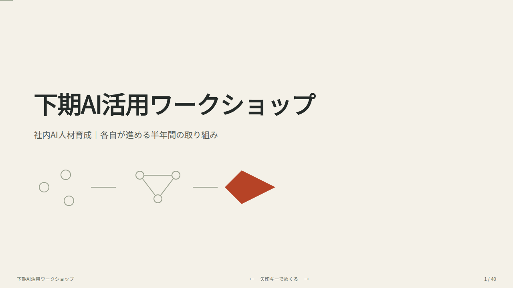
下期AI活用ワークショップの企画をご説明します。
業務を問わず、目的に対してAIを正しく使い、その目的を達成できるようになることを目指す企画です。
本日の内容：2本の柱と、本日の依頼

見出し 本日の内容：2つの取り組みと、本日の依頼
導入文 企画は、ワークショップとAI活用を続ける仕組みづくりの2つで説明する。決めていただくのは最後の依頼である。
本日の内容です。
この企画は、ワークショップと、AI活用を続ける仕組みづくりの2つの取り組みで構成しています。
はじめに、背景と、何を身につけるのか、2つの取り組みの関係をご説明します。
次にワークショップです。
参加者が身につけることと、期待する効果、進め方、測り方です。
続いてAI活用を続ける仕組みづくりです。
目指す姿、今期に取り組む範囲、運営がすること、指標です。
最後に、前提条件と、本日決めていただきたい3件をご説明します。
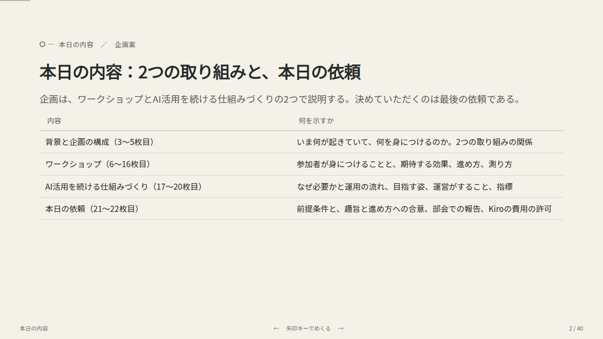
見出し 本日の内容：2本の柱と、本日の依頼
導入文 企画は、ワークショップとAI活用を続ける仕組みづくりの2本の柱で説明する。決めていただくのは最後の依頼である。
本日の内容です。
この企画は、ワークショップと、AI活用を続ける仕組みづくりの2本の柱で構成しています。
はじめに、背景と、何を身につけるのか、2本の柱の関係をご説明します。
次にワークショップです。
参加者が身につけることと、期待する効果、進め方、測り方です。
続いてAI活用を続ける仕組みづくりです。
目指す姿、今期に取り組む範囲、運営がすること、指標です。
最後に、前提条件と、本日決めていただきたい3件をご説明します。
背景：個人のAI活用は進んだが、チームや組織ではなかなか進まない
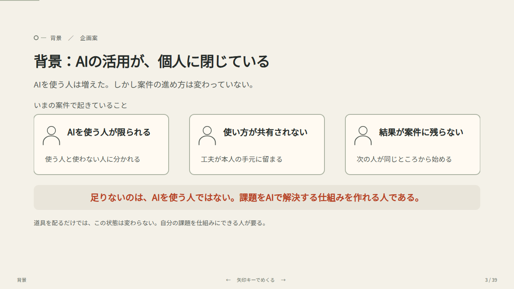
見出し 背景：AIの活用が、個人に閉じている
導入文 AIを使う人は増えた。しかし案件の進め方は変わっていない。
まず背景についてご説明します。
AIを使う人は増加しています。
しかし案件の進め方は変わっていません。
いまの案件で起きていることは3つです。
1つ目は、AIを使う人が案件の中で限られることです。
使う人と使わない人に分かれます。
2つ目は、使い方が共有されないことです。
工夫が本人の手元に留まります。
3つ目は、試した結果が案件に残らないことです。
次の人が、同じところから始めます。
足りないのは、AIを使う人ではありません。
課題をAIで解決する仕組みを作れる人です。
道具を配るだけでは、この状態は変わりません。
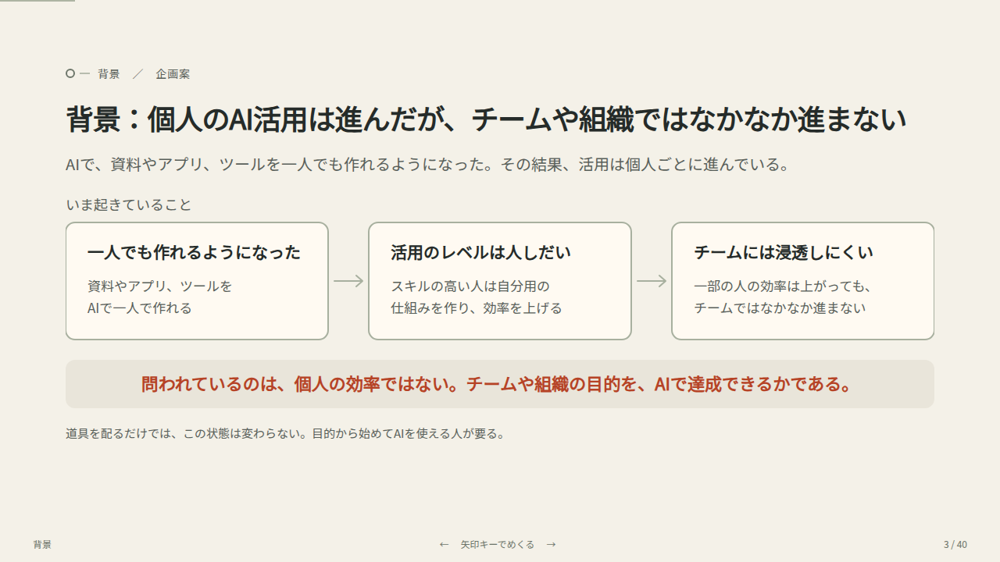
見出し 背景：個人のAI活用は進んだが、チームや組織ではなかなか進まない
導入文 AIで、資料やアプリ、ツールを一人でも作れるようになった。その結果、活用は個人ごとに進んでいる。
まず背景についてご説明します。
AIの台頭で、モノを作る難易度は大きく下がりました。
資料もアプリもツールも、これまで技術的な障壁があったものを、AIを使えば一人でも作れるようになりました。
これは事実です。
一人で作れるようになったぶん、何をどこまで作るかは、その人しだいになりました。
しかし現場では、生産性が上がりきらず、AI活用がなかなか進まないという現実があります。
個人のAI活用のレベルは、人によってさまざまです。
スキルの高い人は、自分の仕事を進めやすいように仕組みを作り、自分の作業効率を上げています。
ただ、それがチームのやり方としてなかなか浸透していません。
そのため、一部の人の効率は上がっていても、チームや組織での活用はなかなか進まないと感じている人が多いのではないでしょうか。
人ごとに仕組みが増え、全体の手間はかえって増えている可能性もあります。
問われているのは、個人の効率ではありません。
チームや組織の目的を、AIで達成できるかです。
道具を配るだけでは、この状態は変化しません。
| 観点の群 | 結果 | 見つけたこと | 直したこと |
|---|---|---|---|
| 論とストーリー | 修正 | 背景が「AIの活用が個人に閉じている」の1点で、目的の軸とつながらなかった | 個人のAI活用は進んだがチームや組織の成果は変わっていない現状に書き直し、問われているのはチームや組織の目的をAIで達成できるかだとした |
| 日本語 | 修正 | 見出しの「チームや組織の成果は変わっていない」が言い切りすぎだった | 「チームや組織ではなかなか進まない」にし、リード ・ 図 ・ 原稿と期待する効果の現状も同じ言い方にした（ACDR 0036） |
| 日本語 | 修正 | 「成果物を作る難易度」では、資料 ・ システム ・ アプリを作る技術的な障壁が取り払われたという意味が伝わらない | リード ・ 図 ・ 原稿を「AIで、資料やアプリ、ツールを一人でも作れるようになった。その結果、活用は個人ごとに進んでいる」にし、2枚目（活用のレベルは人しだい）へ因果でつなげた（ACDR 0036） |
本質：大事なのはAIツールの使い方ではなく、目的をAIで達成できるか

見出し 本質：顧客先でも価値を生み続けられる人材を増やす
導入文 案件が終わると、作った仕組みはその案件に残る。持ち運べるのは、課題をAIで解決する力である。
ここがこの企画の本質です。
案件でAIの仕組みを作ると、その仕組みは案件の中に残ります。
しかし案件が終われば、そこまでです。
持ち運べるのは、課題の本質を捉えてAIで解決する力のほうです。
この力は人に残るため、自社の次の案件でも、顧客の案件でも同じように使えます。
だからこの企画が増やそうとしているのは、成果物の数ではなく、その力を持つ人です。
下期の15名が、その最初の一歩です。
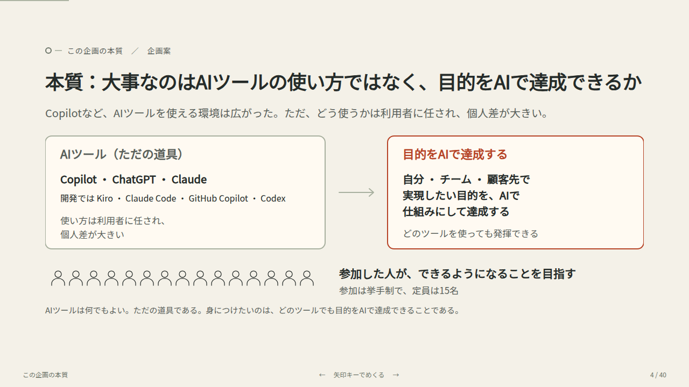
見出し 本質：大事なのはAIツールの使い方ではなく、目的をAIで達成できるか
導入文 Copilotなど、AIツールを使える環境は広がった。ただ、どう使うかは利用者に任され、個人差が大きい。
では、何を身につければよいのか。
ここがこの企画の本質です。
多くの職場で、Copilotを使える環境が整ってきました。
ClaudeやChatGPTを使える職場も増えています。
開発では、Kiro、Claude Code、GitHub Copilot、Codexなどを使えるところもあります。
こうしたAIツールは広く使える分、どう使うかは利用者に任されています。
うまく使える人は、何倍も効率を上げているでしょう。
ここに個人差があります。
その使い方は共有される形になっていないか、共有されていても浸透していません。
ただ、大事なのはAIツールそのものの使い方ではありません。
AIツールは何でもよく、ただの道具です。
大事なのは、それをどう扱い、自分やチーム、顧客先で実現したい目的を、AIで達成できるようになるかです。
この企画では、そこを目指します。
| 観点の群 | 結果 | 見つけたこと | 直したこと |
|---|---|---|---|
| スライドと原稿の整合 | 修正 | 15名を育成すると言い切っていた。参加は挙手制で、15名は予算から決めた定員である | 「参加した人に、この力を身につけてもらう」「挙手制・定員15名」とし、企画の目的 ・ 主KPI ・ 本日の依頼 ・ 前提条件も同じ言い方にした（ACDR 0037） |
| 論とストーリー | 修正 | 本質が人材の数と「課題をAIで解決する力」だった | 目的に対してAIを正しく使い、目的を達成できる集団をつくる、にした |
| 論とストーリー | 修正 | 本質の枚の見出しが組織の目指す姿（目指す姿の枚と同じ主張）で、図は個人の力の話だった。位置も、目指す成果のあとで論が一度後ろに下がっていた | 見出しを「残すべきは仕組みではなく、目的をAIで達成する力」にし、背景の直後（企画の目的の前）へ移した（ACDR 0037） |
| 論とストーリー | 修正 | 「残すべきは仕組みではなく力」と、仕組みを残すことを否定するように読めた | 「大事なのはAIツールの使い方ではなく、目的をAIで達成する力」にし、具体的なAIツールの名前と、使い方の個人差を示した（ACDR 0037） |
企画の構成：2つの取り組みで進める
この枚は新しく追加したものである。変更前には無い。
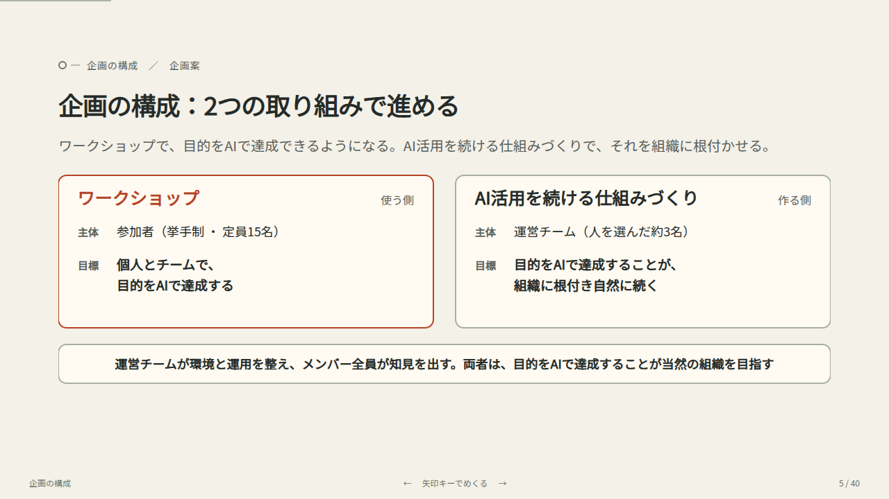
この本質を踏まえ、企画は2つの取り組みで構成しています。
1つ目はワークショップです。
主体は参加者で、挙手制、定員は15名です。
目標は、参加した人が、個人とチームで、目的をAIで達成できるようになることです。
2つ目はAI活用を続ける仕組みづくりです。
主体は運営チームで、人を選んだ3名ほどで構成します。
目標は、目的をAIで達成することが組織に根付き、義務ではなく自然に続くことです。
運営チームが環境と運用を整え、参加者を含むメンバー全員が知見を出して使います。
参加者に運営チームへ加わることは求めません。
両者は、目的をAIで達成することが当然の組織という、同じ方向を向きます。
ここから、ワークショップ、仕組みづくりの順にご説明します。
| 観点の群 | 結果 | 見つけたこと | 直したこと |
|---|---|---|---|
| 論とストーリー | 修正 | ワークショップと組織の取り組みが1本の流れに混ざり、どこからが組織の取り組みかが読めなかった。「浸透の進め方」など意味の取れない見出しがあった | 企画の構成の枚と第2部の冒頭の枚を加え、見出しの上に第1部 ・ 第2部を示した。第2部の見出しは「取り組む範囲」「運営がすること」にした。期待する効果からKPIへの対応づけを外した（ACDR 0037） |
ワークショップ：目的をAIで達成できるようになる

見出し 企画の目的：AIで仕組みを作り、課題を解決する力
導入文 身近な課題に対して、AIで動く仕組みを自分で作り、解決できる人材を育成する。開発者とPM・PL約15名が、2026年10月から2027年3月に取り組む。
身近な業務課題から、新しい仕組みをAIで生み出せる人材を育てます。
課題の本質を捉え、それを解決する具体的な仕組みへ変えることが狙いです。
エージェントやSkillsを使って形にし、実際に試した結果から改善します。
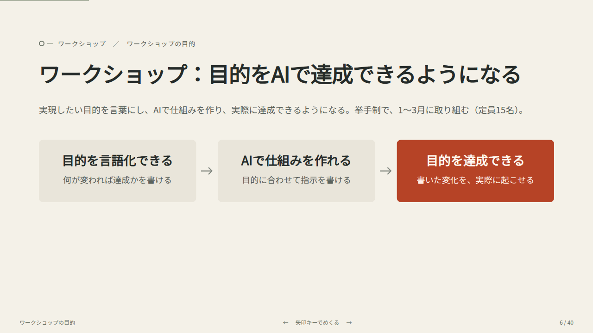
見出し ワークショップ：目的をAIで達成できるようになる
導入文 実現したい目的を言葉にし、AIで仕組みを作り、実際に達成できるようになる。挙手制で、1〜3月に取り組む（定員15名）。
ここから、ワークショップについてご説明します。
まず、ワークショップの目的です。
4枚目でお話ししたとおり、大事なのはAIツールの使い方ではなく、目的をAIで達成できるかどうかです。
ワークショップの目的は、参加してくれた一人ひとりが、それをできるようになることです。
ワークショップを終えたとき、参加者は、自分が実現したい目的を言葉にし、AIで仕組みを作って、その目的を実際に達成できている状態を目指します。
目的は、自分のことでも、チームのことでも、顧客先のことでもかまいません。
使うツールも問いません。
そのために何を身につけるのかを、次の枚でご説明します。
| 観点の群 | 結果 | 見つけたこと | 直したこと |
|---|---|---|---|
| 論とストーリー | 修正 | 企画の目的が「AIで仕組みを作り、課題を解決する力」だった | 目的をAIで達成する力にし、図を目的を言語化する → AIで仕組みを作る → 目的を達成する、の3段にした |
| 論とストーリー | 修正 | 企画の目的の原稿が手順の説明になっていた。「力」を繰り返してくどかった | 「第1部の目的：目的をAIで達成できるようになる」にし、本質から受けて到達点を言う原稿にした。企画書全体で「力」を外した（ACDR 0037） |
| 日本語 | 修正 | 「身近な目的」が、課題を軸にしていた頃の「身近な課題」の言い換えのままで、何を指すかが分からない | 「自分が実現したい目的」にし、オリエンテーションのゴールの枚（I0-S5）のリードも同じ言い方にした（ACDR 0037） |
身につけること：目的をAIで達成するための3つ

見出し 育てたい力：抽象と具体の往復
導入文 課題の本質を捉え、使う場面に合わせて仕組みへ具体化する。開発者もPM・PLも、この往復を土台にする。
共通の土台にしたいのは、課題の本質を抽象的に捉え、それを具体化して解決する力です。
ここでいう抽象とは、目的に照らして、個別の出来事から重要な構造や関係を取り出すことです。
何を残し何を省くかを明らかにするため、曖昧な表現へ言い換えることとは異なります。
具体化では、使う場面や制約に合わせてAIで仕組みを作り、実際に役に立つかを確認します。
最初に捉えた本質も仮説なので、試した結果に応じて捉え直します。
この抽象と具体の往復を、開発者とPM・PLの共通の土台にします。
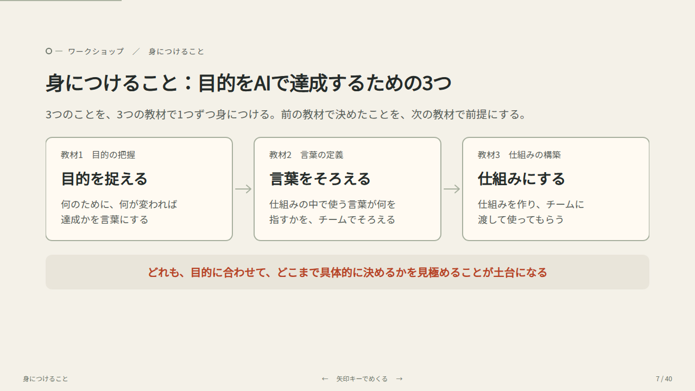
見出し 身につけること：目的をAIで達成するための3つ
導入文 3つのことを、3つの教材で1つずつ身につける。前の教材で決めたことを、次の教材で前提にする。
では、目的をAIで達成するために、何を身につけるのか。
3つあります。
1つ目は、目的を捉えることです。
何のためにするのか、何が変われば達成かを言葉にします。
教材1、目的の把握で学びます。
2つ目は、言葉をそろえることです。
同じ言葉が場面ごとに違うものを指すことを確認し、仕組みの中で何を指すかを、チームでそろえます。
教材2、言葉の定義で学びます。
3つ目は、仕組みにすることです。
決めたことを仕組みにし、チームに渡して使ってもらいます。
教材3、仕組みの構築で学びます。
どれにも共通して必要なのが、目的に合わせて、どこまで具体的に決めるかを見極める考え方です。
指示も言葉も仕組みも、決めなさすぎると、返ってくるものが毎回変わります。
決めすぎると、その1回にしか使えません。
ちょうどいい具合は、一度で決め切れるものではありません。
書き足して、返ってきたものを確認し、ずれていればまた書き足します。
この繰り返しで近づけていきます。
この考え方は、教材1で最初に学びます。
| 観点の群 | 結果 | 見つけたこと | 直したこと |
|---|---|---|---|
| 論とストーリー | 修正 | 抽象と具体の往復が「課題の本質を捉える」だった | 目的に合った高さで、抽象と具体を往復する力にした |
| 論とストーリー | 修正 | 4枚目の「目的をAIで達成する力」とは別に、抽象と具体の往復を育てたい力として立てていた | 目的をAIで達成する力を3つの力（教材1〜3）に分け、どの力にも共通する土台を「目的に合わせて、どこまで具体的に決めるかの見極め」と、教材1の前でも分かる語で示した（ACDR 0037） |
期待する効果：手戻りが減り、目的を達成するやり方がチームに残る

見出し 期待する効果：作った人以外も、同じ業務の手間を解決できる
導入文 いま、業務の手間を解決できるのは、その手間を知っている本人だけである。作った仕組みは、同じ業務を担当する人が使う。
期待する効果です。
本質的に変わるのは、誰が解決できるかです。
いまは、業務の手間を解決できるのは、その手間を知っている本人だけです。
たとえば引き継ぎのたびの確認という手間は、その業務を担当している本人が、自分の時間を使って処理します。
解決は本人の中で終わるので、同じ手間を持つ人は、また最初から始めます。
この企画のあとは、本人がその手間をAIで仕組みにします。
使うのは、作った本人ではありません。
同じ業務を担当する人です。
同僚、他部署、そして顧客の案件です。
その人たちが、自分の現場で同じ手間を解決します。
効果は3つです。
解決できる人が増えること。
作った人がいなくても解決できること。
次の案件でも同じ仕組みを使えることです。
確認は、他の人に使われたかどうかを主KPIで、実務で使う場面が増えたかどうかを業務別の活用で見ます。
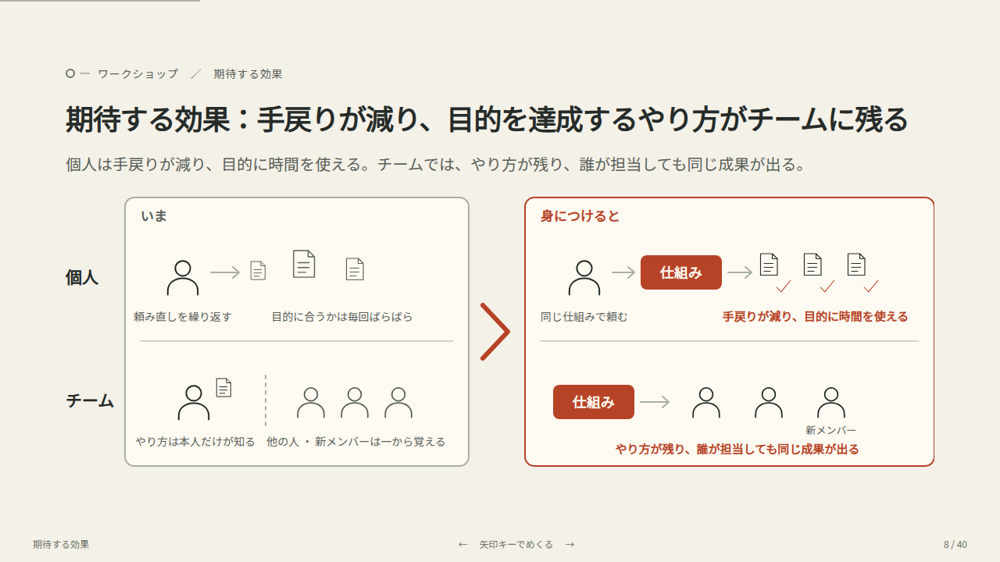
見出し 期待する効果：手戻りが減り、目的を達成するやり方がチームに残る
導入文 個人は手戻りが減り、目的に時間を使える。チームでは、やり方が残り、誰が担当しても同じ成果が出る。
この3つを身につけ、目的をAIで達成できるようになると、期待できる効果は2つです。
1つ目は、手戻りが減ることです。
いまは、目的に合う結果が得られるまで、頼み直しや手直しを繰り返しています。
目的に合わせて決めたことを仕組みにしておけば、毎回、目的に合った結果が返ってくるので、空いた時間を、判断や関係者との調整など、目的そのものに使えます。
2つ目は、目的を達成するやり方がチームに残ることです。
いまは、そのやり方が、できる人の頭の中にしかありません。
仕組みとして残れば、誰が担当しても同じ成果が出て、新しく入った人もすぐに戦力になります。
組織の層で何を目指すかは、AI活用を続ける仕組みづくりでご説明します。
| 観点の群 | 結果 | 見つけたこと | 直したこと |
|---|---|---|---|
| 論とストーリー | 修正 | 誰が手間を解決できるか、を軸にしていた | 作った人以外も、同じ業務で目的を達成できる、にした |
手段：目的を達成する仕組みは、エージェントとSkillsで作る
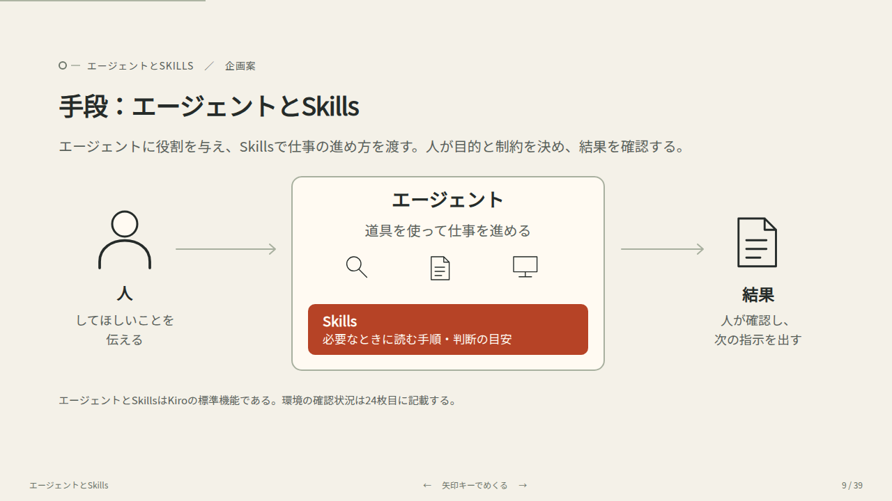
見出し 手段：エージェントとSkills
導入文 エージェントに役割を与え、Skillsで仕事の進め方を渡す。人が目的と制約を決め、結果を確認する。
前のページで示した、自分のスキルをAIで仕組化して他の人にも届けるという成果を、エージェントとSkillsで実現します。
この図は学習のために仕事の関係を整理したものです。
カスタムエージェントには役割や使える道具、参照する情報などを設定できます。
Skillsは必要な場面で参照する手順や参考資料のまとまりです。
すべてを自律実行させる必要はなく、何を任せて何を人が確認するかを決めることを重視します。
Kiro公式資料は付録に記載しています。
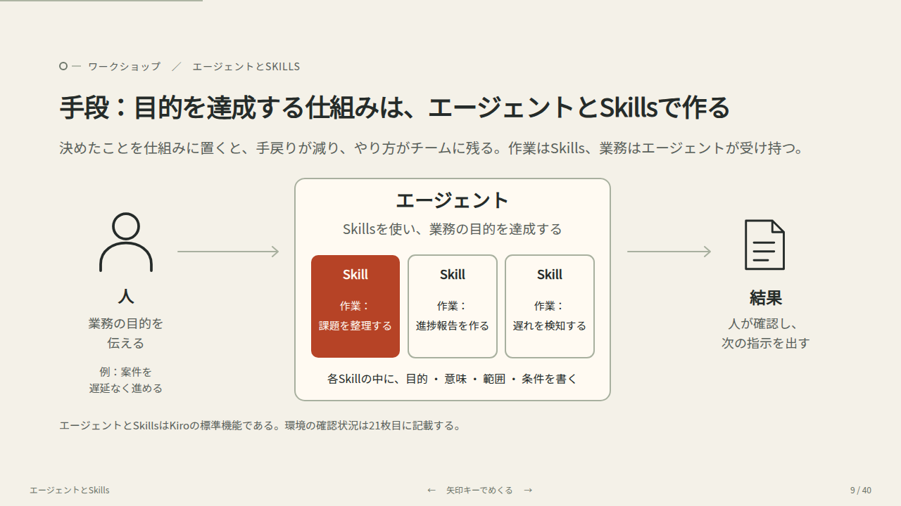
見出し 手段：目的を達成する仕組みは、エージェントとSkillsで作る
導入文 決めたことを仕組みに置くと、手戻りが減り、やり方がチームに残る。作業はSkills、業務はエージェントが受け持つ。
前の枚の効果、手戻りが減り、やり方がチームに残る状態は、決めたことを毎回書き直していては得られません。
そこで、決めたことを仕組みに置いておきます。
その仕組みを、エージェントとSkillsで作ります。
Skillsは、作業ごとの道具です。
議事録から課題を整理する、進捗報告を作る、遅れを検知するといった作業は、それぞれ進め方と出すものが違うため、作業ごとに1つのSkillにします。
作業の目的、言葉の意味、情報を取得する範囲、必ず入れる条件は、すべてSkillの中に書きます。
エージェントは、そのSkillsを使って業務の目的を達成します。
たとえばPMの業務は、案件を遅延なく進めることです。
PMが自分で作業を選んで進めるのと同じように、エージェントは、どのSkillをいつ使うかを判断します。
人は業務の目的を伝え、返ってきた結果を確認して、次の指示を出します。
| 観点の群 | 結果 | 見つけたこと | 直したこと |
|---|---|---|---|
| 論とストーリー | 修正 | Skillsを「手順 ・ 判断の目安」とだけ記述し、業務と作業の対応が無かった | 見出しを「手段：業務はエージェント、作業はSkills」にし、エージェントの枠の中に作業ごとのSkillを3つ並べた（ACDR 0036） |
教材：動画と成果物を、探しやすいポータルで提供する

見出し 教材：考え方を教え、AIツールの使い方は最小限
導入文 音声付きの短い動画で考え方を学ぶ。AIツールの使い方は、設定を用意して実行し、結果を確認するところまでを示す。
教材は2種類に分けます。
中心になるのは考え方の動画で、何を任せるか、何を伝えるか、どう確認するかを扱います。
もう1つはAIツールの使い方で、設定を用意して実行し、結果を確認するところまでの最小限にとどめます。
実行環境はKiroですが、教材が対象とするのは道具に共通する手順です。
ツールの使い方が分からないために着手できない状態は避けますが、業務課題の完成例は配りません。
完成例を見せると、参加者が自分で考える範囲が狭くなるためです。
教材はこれから制作する計画で、この提案資料が受講者向けの動画ではありません。
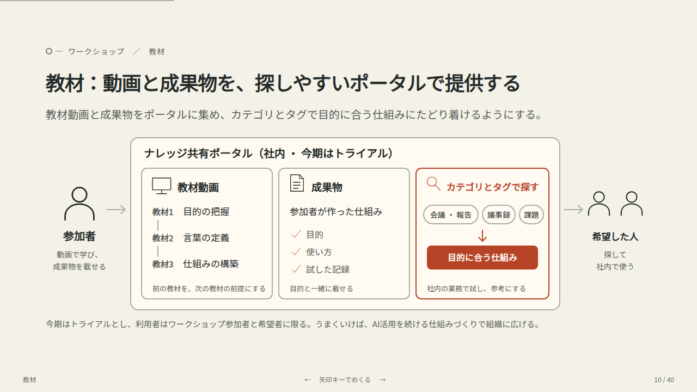
見出し 教材：動画と成果物を、探しやすいポータルで提供する
導入文 教材動画と成果物をポータルに集め、カテゴリとタグで目的に合う仕組みにたどり着けるようにする。
身につける3つと、仕組みの作り方を、どこで、どう学んでもらうかです。
教材は、社内のナレッジ共有ポータルで提供します。
ポータルには2つのものを集めます。
1つ目は、音声付きの教材動画です。
教材1 目的の把握、教材2 言葉の定義、教材3 仕組みの構築を、前の教材で決めたことを次の教材で前提にする順に並べます。
2つ目は、参加者の成果物です。
参加者が作った仕組みを、目的、使い方、試した記録と一緒に載せます。
そのうえで、カテゴリとタグを設計し、目的に合う仕組みにたどり着きやすくします。
たとえば、会議・報告のカテゴリから、議事録や課題のタグをたどると、課題を整理する仕組みが見つかり、社内の業務で試したり、自分で作るときの参考にしたりできます。
今期はトライアルとして、利用者はワークショップの参加者と、希望した人に限ります。
うまくいけば、仕組みにたどり着きやすい場を組織に広げる取り組みとして、AI活用を続ける仕組みづくりにつなげます。
| 観点の群 | 結果 | 見つけたこと | 直したこと |
|---|---|---|---|
| 日本語 | 修正 | 企画の目的 ・ 目指す成果 ・ 教材 ・ 組織への浸透の枚に、教材1を受けていないと分からない「高さ」の語が残っていた | 「目的に合わせて」「どこまで具体的に決めるかを見極めて」「目的に合わない具体的な形」に揃えた（ACDR 0037） |
| 図の表現 | 修正 | 6回構成の旧い教材案だった | 3つの教材（目的の把握 ・ 言葉の定義 ・ 仕組みの構築）の段階の図にした |
進め方：3か月で、作ってチームで使い、成果を共有する

見出し 進め方：半年で作成から利用へ
導入文 2026年10月から2027年3月まで、月ごとの区切りで、各自のペースで進める。
全員が同じ時間に集合することは前提にしません。
10月から翌3月までを提案期間とし、12月に中間共有、3月に最終共有を置きます。
初期から試作に触れ、中間発表まで完成を待たないようにします。
途中のテーマ変更も、試した結果に理由があれば認めます。
休暇や繁忙期を踏まえ、実働20週を工数試算の仮定にしています。
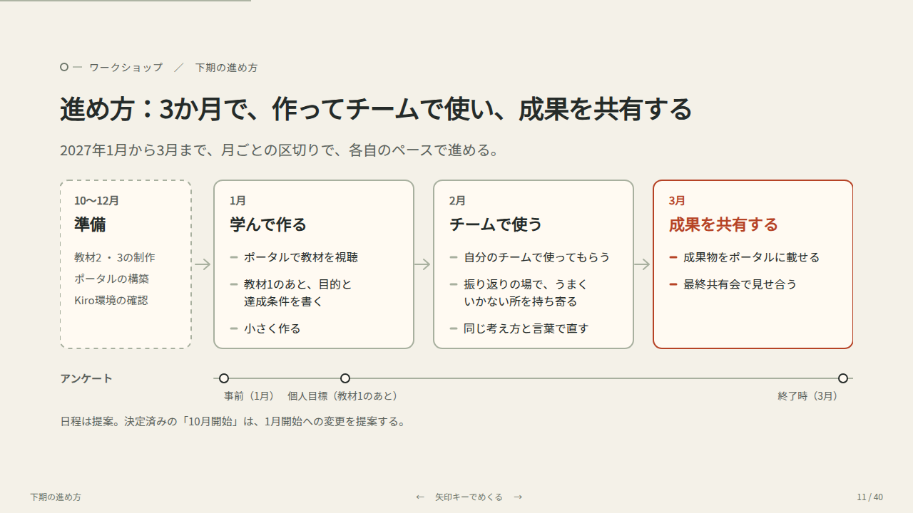
見出し 進め方：3か月で、作ってチームで使い、成果を共有する
導入文 2027年1月から3月まで、月ごとの区切りで、各自のペースで進める。
続いて、進め方です。
期間は、2027年1月から3月までの3か月です。
半年にすると途中で中だるみしやすいため、四半期にまとめます。
全員が同じ時間に集合することは前提にせず、各自のペースで進めます。
その前の10月から12月を準備期間とし、教材2と教材3の制作、ポータルの構築、社内のKiro環境の確認を行います。
1月は、ポータルで教材を視聴し、教材1のあとに、自分の目的と達成条件を書きます。
そのうえで、小さく作ります。
2月は、作った仕組みを自分のチームで使ってもらいます。
チームで振り返りの場を開き、どの仕組みの、どこで、何がうまくいかないかを持ち寄って、同じ考え方と同じ言葉で直します。
3月は、成果物をポータルに載せ、最終共有会で見せ合います。
アンケートは、始める前と終わった後に取ります。
教材1のあとには、個人目標として目的と達成条件を書いてもらいます。
| 観点の群 | 結果 | 見つけたこと | 直したこと |
|---|---|---|---|
| 論とストーリー | 修正 | 仕組みを作れるようになっても、チームで使われるまでの実践が企画に無かった | 教材2を文脈の中で言葉をチームでそろえる、教材3を仕組みをチームに渡す、進め方を作ってチームで使い振り返って直す流れにした（ボードの論点10、ACDR 0037） |
| 論とストーリー | 修正 | 半年は長く中だるみしやすい（部長のフィードバック）。テーマの提示は不要。手段の枚が目的とどうつながるか分からない。第1部の始まりを言わずに説明が始まる | 期間を1〜3月の3か月、測定を2時点、共有を3月の1回と任意の相談にした。テーマ ・ 題材の例の枚を外した。手段の枚を期待する効果からの理由で始めた。原稿に枚のつなぎを置いた（ACDR 0037） |
支援：ポータルで学び、Teamsで相談する

見出し 支援：学習コンテンツと相談
導入文 運営に知識が集まっている前提で、学習コンテンツと相談の2つで支援する。
参加者同士で専門的なサポートを分担する前提は置きません。
ブログや動画で学び、Teamsで運営に相談できる体制にします。
月1回の定例相談会は開催案です。
資料発表の準備を求めず、今の課題や相談したいことをざっくばらんに話す場にします。
時間帯はまだ決まっていません。
定時後になる場合は任意参加とし、相談内容の要点をTeamsに残します。
参加できない人も投稿で同じ支援を受けられるようにします。
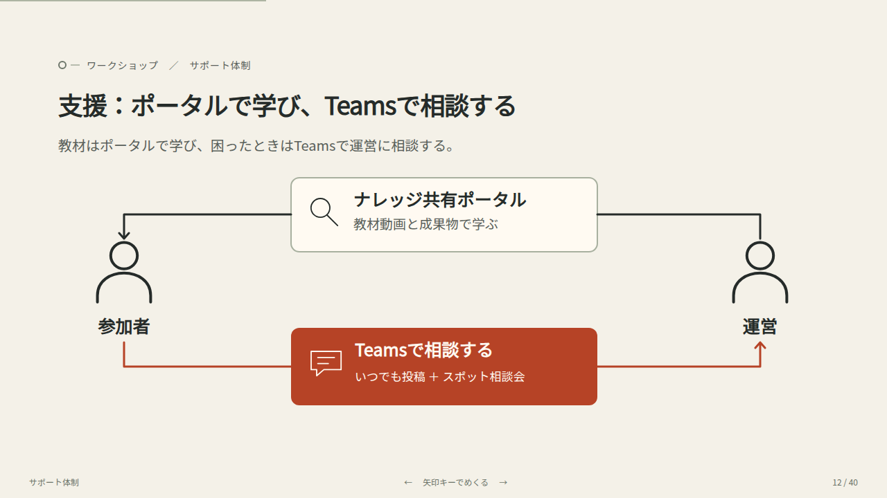
見出し 支援：ポータルで学び、Teamsで相談する
導入文 教材はポータルで学び、困ったときはTeamsで運営に相談する。
進めるあいだの支援です。
教材は10枚目のナレッジ共有ポータルで学び、困ったときはTeamsで運営に相談できる体制にします。
相談は、いつでも受け付けられるようにTeamsを整備します。
相談が入れば、予定を組んでスポット相談会を開きます。
資料の準備は求めず、今の課題や相談したいことを話す場にします。
相談内容の要点はTeamsに記録し、参加していない人も読めるようにします。
共有：3月の最終共有会で成果を見せ合う

見出し 共有：12月と3月の2回
導入文 目的を分けて開催する。12月は途中経過の共有、3月は成果物の公開と交流。
共有の機会は12月と3月の2回です。
12月はTeamsのWeb会議で、画面共有により途中の成果物を動かし、判断に迷っている点を話します。
発表用動画の制作は求めません。
1人5分と会話3分で、15名の場合は約120分を見込みます。
3月はオフラインの交流会兼成果物発表会です。
軽食を囲んで短いデモを紹介し、希望者へ仕組みを共有します。
その場で試せないものは、後日1週間の試用期間へつなげます。
人気投票と表彰は、交流を楽しむ企画として検討します。
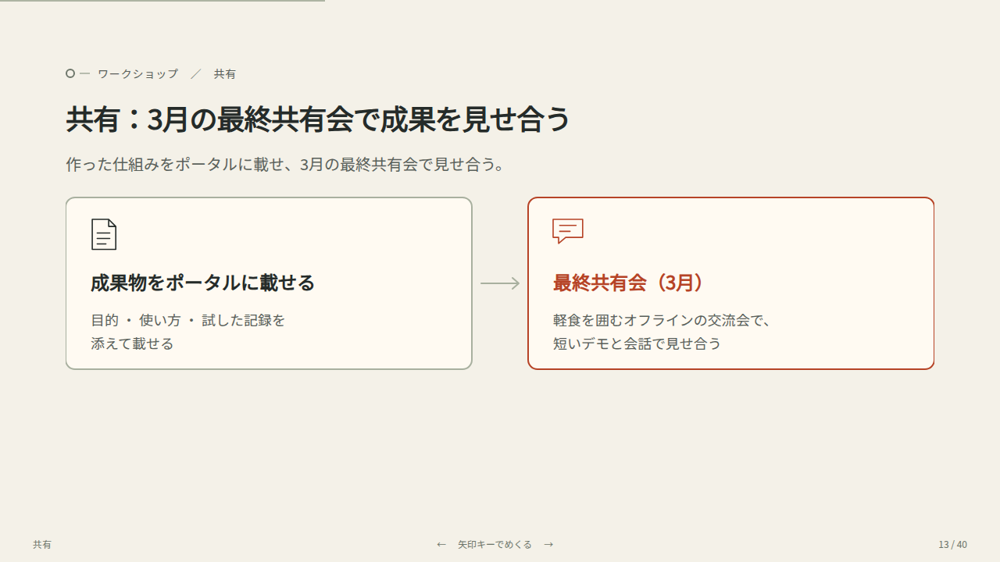
見出し 共有：3月の最終共有会で成果を見せ合う
導入文 作った仕組みをポータルに載せ、3月の最終共有会で見せ合う。
成果の共有です。
共有の場は、3月の最終共有会です。
参加者は、作った仕組みを、目的・使い方・試した記録と一緒にポータルに載せます。
最終共有会は、軽食を囲むオフラインの交流会です。
短いデモと会話で、作った仕組みを見せ合います。
ポータルに載せておくので、会のあとも、ポータルで探して参考にできます。
効果測定：目的の達成を主に、4つの補助で変化を判定する
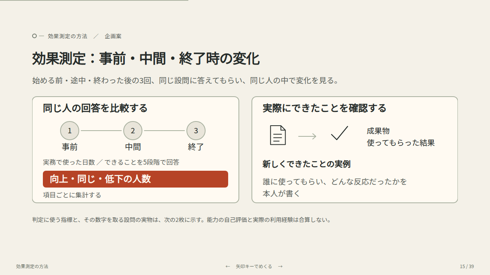
見出し 効果測定：事前・中間・終了時の変化
導入文 始める前・途中・終わった後の3回、同じ設問に答えてもらい、同じ人の中で変化を見る。
6枚目で示した目指す成果を、3つの指標で判定します。
主KPIは、自分の知識をAIで動く仕組みにし、他の人が使用して役立ったと確認できた参加者の割合を提案します。
開始時の参加者数を分母に固定し、未提出や未確認も明示します。
個人目標の達成状況と、業務別のAI活用の変化を補助指標にします。
アンケートは同じ人・同じ業務を比較し、回答人数を示します。
能力の自己評価と実際の利用経験は合算しません。
数値目標は事前調査と運営条件を見て開催前に決めます。
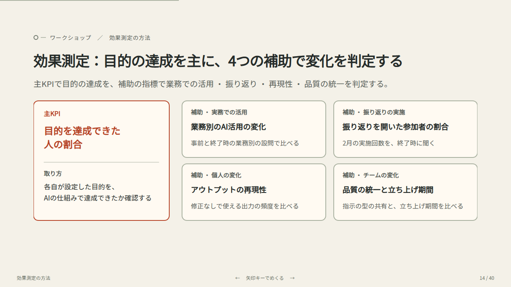
見出し 効果測定：目的の達成を主に、4つの補助で変化を判定する
導入文 主KPIで目的の達成を、補助の指標で業務での活用 ・ 振り返り ・ 再現性 ・ 品質の統一を判定する。
ここからは、ワークショップの効果の測り方です。
主KPIは、目的を達成できた人の割合です。
教材1のあとに各自が設定した目的を、AIの仕組みで達成できたかを確認します。
補助の指標は4つです。
1つ目は、業務別のAI活用の変化です。
2つ目は、2月にチームで振り返りの場を開いた人の割合です。
実際に開いたかを確認します。
3つ目と4つ目は、8枚目で示した個人とチームの変化です。
個人はアウトプットの再現性で、修正なしで使える出力の頻度を比べます。
チームは品質の統一と立ち上げ期間で、指示の型やSkillの共有と、新規参画者が仕事を始めるまでの期間を比べます。
どちらも、始める前と終わった後に同じ設問で聞きます。
主KPIと補助の指標を、次の2枚でご説明します。
主KPI：目的を達成できた人の割合

見出し 主KPI：他の人に役立つ仕組みを作れた人の割合
導入文 分母は開始時の参加者数、分子は「使ってもらい、役立った」と報告できた人数。右がその設問である。
主KPIは1つです。
他の人に使ってもらい、役立ったと報告できた参加者の割合です。
分母は開始時の参加者数15名で固定します。
分子は、右に示した2つの設問から取ります。
R3で誰に使ってもらったかを聞き、R4でその人の反応を聞きます。
R4で「役立った」または「一部役立った」を選んだ人を、分子に数えます。
人数単位で数え、1人が複数作った場合も1人として数えます。
デモを閲覧しただけの相手は数えません。
本人の報告は、運営がデモと成果物で確認します。
未提出や未確認も分母から外さず、内訳として示します。
目標値は開始時の参加者の6割を暫定とし、事前調査を踏まえて確定します。
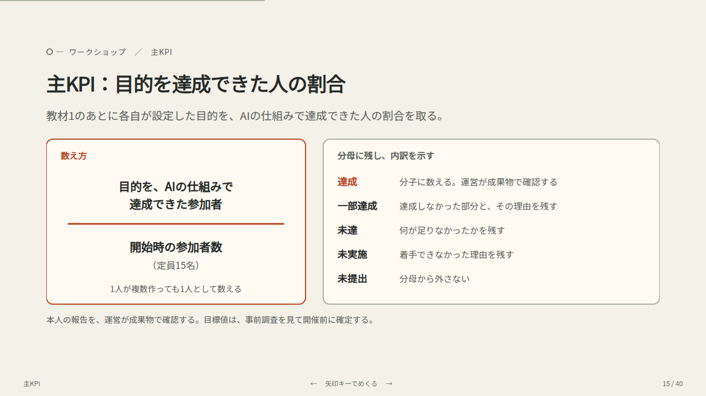
見出し 主KPI：目的を達成できた人の割合
導入文 教材1のあとに各自が設定した目的を、AIの仕組みで達成できた人の割合を取る。
主KPIは、目的を達成できた人の割合です。
教材1のあとに各自が設定した目的を、AIの仕組みで達成できたかを確認します。
分母は、開始時の参加者数で固定します。
定員は15名です。
分子は、目的をAIの仕組みで達成できた参加者です。
本人の報告を、運営が成果物で確認します。
一部達成、未達、未実施、未提出も分母に残し、内訳として示します。
達成しなかった場合も、何が足りなかったかを残し、次の取り組みに使います。
1人が複数作った場合も1人として数えます。
目標値は、事前調査を踏まえて開催前に確定します。
| 観点の群 | 結果 | 見つけたこと | 直したこと |
|---|---|---|---|
| 論とストーリー | 修正 | 主KPIが他の人に役立つ仕組みを作れた人の割合だった | 開始時に決めた目的を達成できた人の割合にし、G4とR1の照合で数える形にした |
| 論とストーリー | 修正 | 主KPIの物差しが、教材を見る前に書いた目的だった。目指す成果の図は、強調が補助指標の側（他の人も使う）に当たっていた | 物差しを教材1を終えて決めた目的にし、個人目標のフォームを教材1のあとに分けた。目指す成果の図は、目的 → SkillとAgent → 目的の達成（強調）にした（ACDR 0037） |
補助の指標：実務での活用、振り返り、再現性、品質の統一
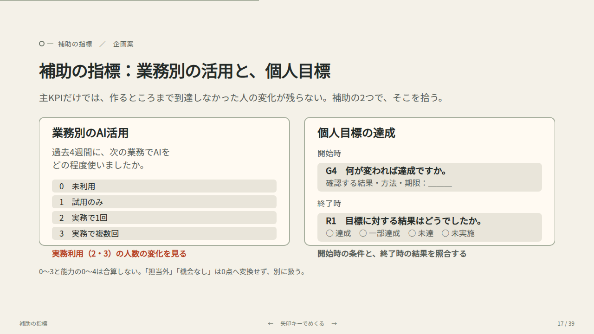
見出し 補助の指標：業務別の活用と、個人目標
導入文 主KPIだけでは、作るところまで到達しなかった人の変化が残らない。補助の2つで、そこを拾う。
補助の指標は2つです。
1つ目は業務別のAI活用です。
過去4週間に、担当する業務でAIをどの程度使ったかを、0から3の4段階で聞きます。
0が未利用、1が試用のみ、2が実務で1回、3が実務で複数回です。
実務利用にあたる2と3を選んだ人数が、事前から終了時にかけてどう変化したかを見ます。
2つ目は個人目標の達成です。
開始時にG4で達成条件を書いてもらい、終了時にR1でその結果を聞きます。
開始時の条件と終了時の結果を照合します。
この2つがあるため、作るところまで到達しなかった人の変化も記録に残ります。
担当していない業務と、担当しているが機会が無かった場合は、0点へ変換せず別に扱います。
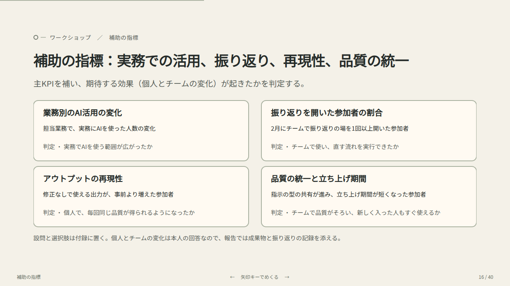
見出し 補助の指標：実務での活用、振り返り、再現性、品質の統一
導入文 主KPIを補い、期待する効果（個人とチームの変化）が起きたかを判定する。
補助の指標は4つです。
1つ目は業務別のAI活用の変化で、担当業務で実務にAIを使った人数が、始める前から終わった後にかけてどう変わったかを見て、実務でAIを使う範囲が広がったかを判定します。
2つ目は、2月にチームで振り返りの場を開いた参加者の割合で、チームで使い、直す流れを実行できたかを判定します。
3つ目はアウトプットの再現性です。
修正なしで使える出力が事前より増えた参加者の割合で、個人で毎回同じ品質が得られるようになったかを判定します。
4つ目は品質の統一と立ち上げ期間です。
指示の型の共有が進み、新しく入った人の立ち上げ期間が短くなった参加者の割合で、チームで品質がそろったかを判定します。
3つ目と4つ目は本人の回答なので、報告では成果物と振り返りの記録を添えます。
設問と選択肢は付録に置いています。
| 観点の群 | 結果 | 見つけたこと | 直したこと |
|---|---|---|---|
| 論とストーリー | 修正 | 補助が業務別の活用と個人目標の達成だった | 業務別の活用と、他の人への役立ち（R3 ・ R4）にした |
AI活用を続ける仕組みづくり：触れる機会と、知見の集約を定着させる
この枚は新しく追加したものである。変更前には無い。
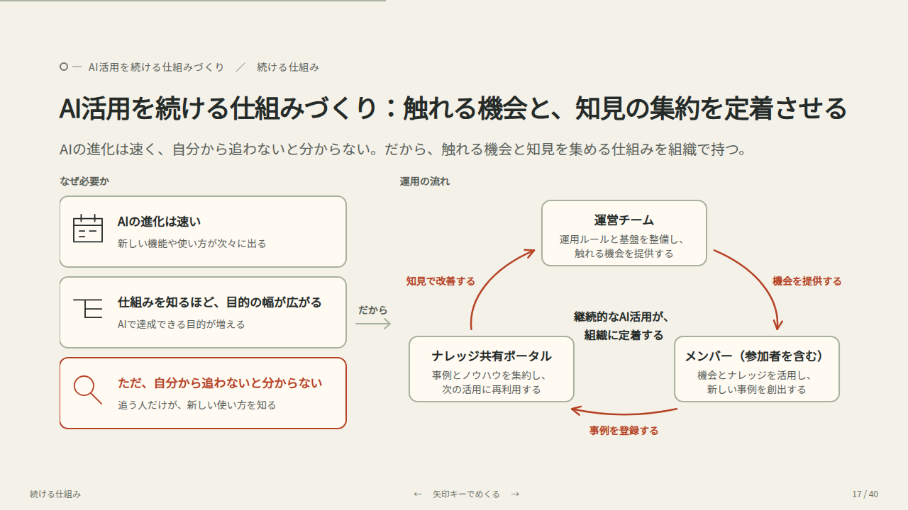
ここからは、もう1つの取り組み、AI活用を続ける仕組みづくりです。
なぜ、この仕組みが必要なのか。
AIの進化はとても速いです。
AIツールそのものの使い方は大事ではないと申し上げましたが、ツールの仕組みを知るほど、AIで達成できる目的の幅が広がるのも事実です。
ただ、こうした情報は、自分から追いかけないと分かりません。
だからこそ、トレンドに触れる機会を組織の取り組みとして定着させ、そこで得たノウハウを、ナレッジマネジメントで集約します。
運用の流れは右の図のとおりです。
運営チームが、ナレッジの運用ルールと基盤を整備し、アイデアソンやワークショップなど、トレンドに触れる機会を提供します。
参加者を含むメンバーが、その機会とナレッジを活用して、新しいAI活用の事例を創出します。
事例とノウハウはナレッジ共有ポータルに集約され、次の活用に再利用されます。
集約した知見をもとに、運営チームが仕組みを改善します。
この流れが継続すれば、継続的なAI活用を、組織として定着させることができます。
目指す姿：今期は先行トライアル、次の期に本格展開する
この枚は新しく追加したものである。変更前には無い。
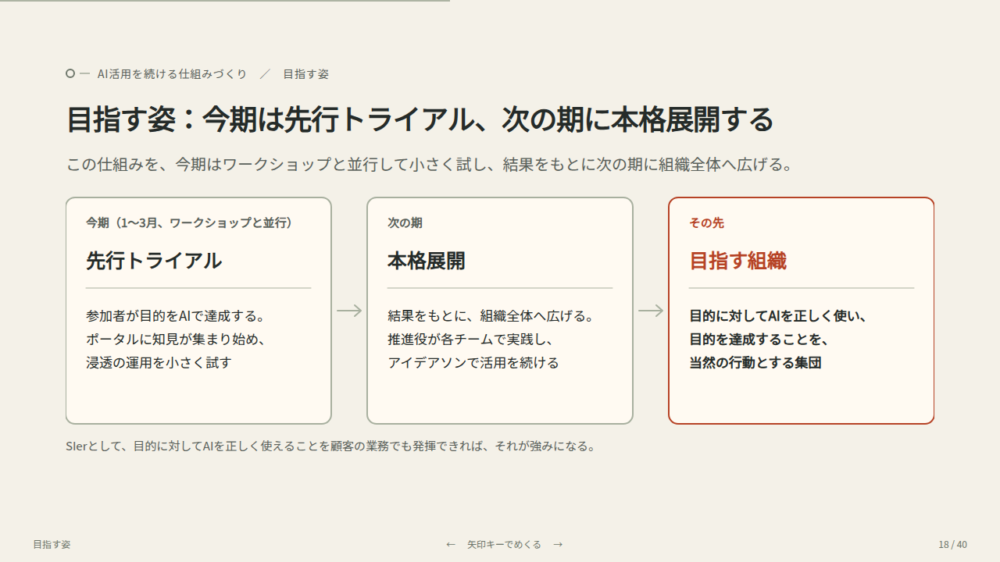
この仕組みを、3つの時期で進めます。
今期は、ワークショップと並行して、先行トライアルとして小さく試します。
参加者が自分の目的をAIで達成し、ナレッジ共有ポータルに知見が集まり始め、組織への浸透の運用も試します。
次の期は本格展開です。
その結果をもとに組織全体へ広げ、推進役が各チームで同じ進め方を実践し、アイデアソンで活用を続けます。
その先に目指すのは、目的に対してAIを正しく使い、目的を達成することを、当然の行動とする集団です。
顧客の業務でもできれば、それがSIerとしての強みになります。
次の枚から、運営がすることと、指標をご説明します。
運営がすること：ナレッジの仕組みを整え、触れる機会を作る
この枚は新しく追加したものである。変更前には無い。
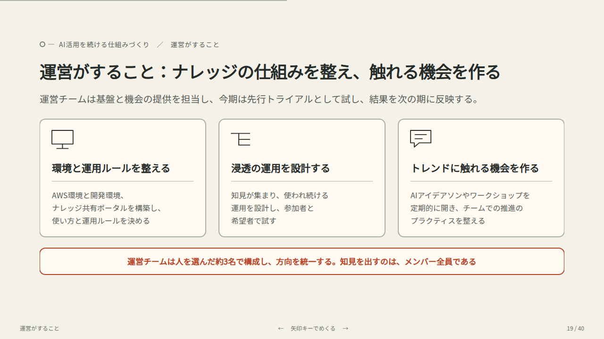
運営がすることです。
運営チームは、先ほどの運用の流れの中で、基盤と機会の提供を担当します。
今期は、ワークショップと並行して、先行トライアルとして試します。
運営がすることは3つです。
1つ目は、環境と運用ルールを整えることです。
AWS環境と開発環境、ナレッジ共有ポータルを構築し、使い方と運用ルールを決めます。
2つ目は、組織浸透の運用を設計することです。
知見が集まり、使われ続ける運用を設計し、参加者と希望者で試します。
3つ目は、トレンドに触れる機会を作ることです。
AIアイデアソンやワークショップを定期的に開き、チームでAI活用を推進するプラクティスを整えます。
運営チームは、人を選んだ3名ほどで構成し、方向を統一します。
広げるのは仕組みではなく考え方で、知見を出すのはメンバー全員です。
これらが今期どこまで進んだかは、次の枚の指標で判定します。
| 観点の群 | 結果 | 見つけたこと | 直したこと |
|---|---|---|---|
| 論とストーリー | 修正 | 浸透の進め方を示す枚が無かった | 個人の意欲に頼らない構造の6つのすることを示す枚を追加した |
仕組みづくりの指標：組織に根付くかを、先行トライアルから判定する
この枚は新しく追加したものである。変更前には無い。
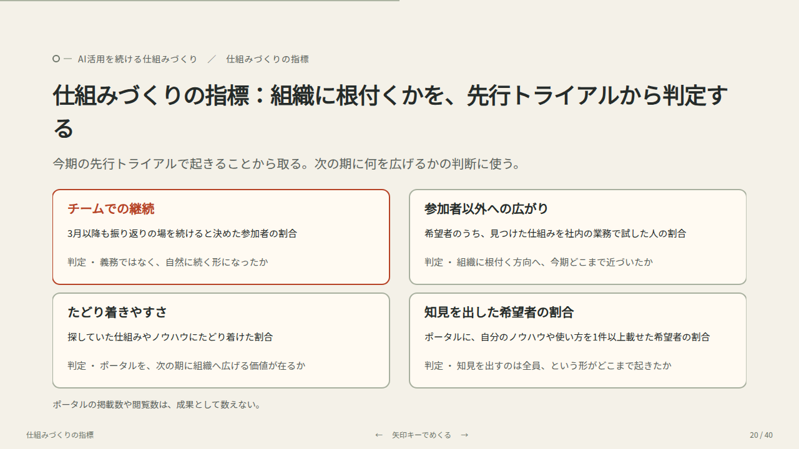
仕組みづくりの指標です。
今期は、ワークショップと並行して、先行トライアルを行います。
その中で起きることから、4つを取ります。
1つ目はチームでの継続です。
3月のあとも、チームで振り返りの場を続けると決めた参加者の割合で、義務ではなく自然に続く形になったかを確認します。
2つ目は参加者以外への広がりです。
ポータルの希望者のうち、見つけた仕組みを社内の業務で試した人の割合です。
3つ目はたどり着きやすさです。
探していた仕組みやノウハウにたどり着けた割合で、たどり着けなかった用途は、次の期に作る仕組みと、カテゴリやタグの改訂に使います。
4つ目は、ポータルに自分のノウハウや使い方を載せた希望者の割合です。
知見を出すのは全員だという考え方が、どこまで実際に起きたかを確認します。
ポータルの掲載数や閲覧数は、成果として数えません。
前提条件：決定済みと未確定

本日の説明で、決まっている条件と、まだ決まっていない事項を区別します。
開催条件は、開催前から決まっているものです。
社内Kiro環境の動作確認は9月中に実施します。
概念教材は構成案までで、1本目は10月中に用意します。
運営担当と工数、利用環境と交流会の費用、主KPIの目標値は、本日の了承のあとに確定します。
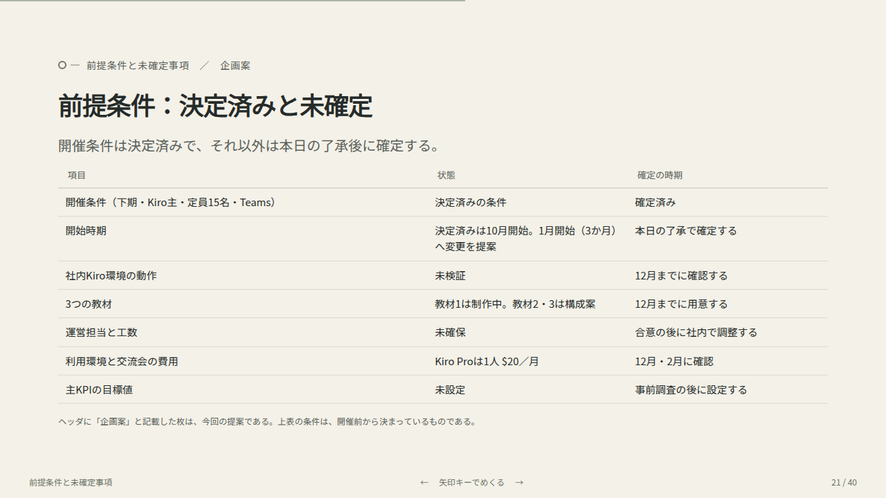
最後に、本日の依頼に入る前に、前提条件を確認します。
決まっている条件と、まだ決まっていない事項を区別します。
開催条件は、開催前から決まっているものです。
開始時期は、決定済みの10月開始から、1月開始の3か月へ変更を提案します。
社内Kiro環境の動作確認は12月までに実施します。
教材1は制作中で、教材2・3は構成案です。
3つとも12月までに用意します。
運営担当と工数、利用環境と交流会の費用、主KPIの目標値は、本日の了承のあとに確定します。
本日の依頼：進め方の合意、部会での報告、Kiro費用の許可
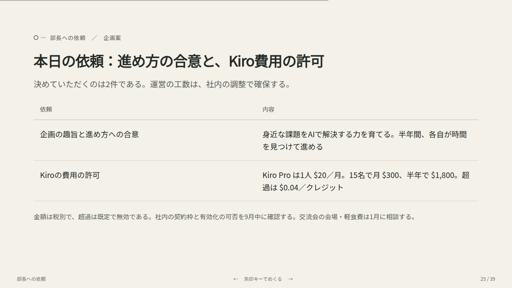
見出し 本日の依頼：進め方の合意と、Kiro費用の許可
導入文 決めていただくのは2件である。運営の工数は、社内の調整で確保する。
本日お願いしたいのは2件です。
1件目は、この企画の趣旨と進め方へのご合意です。
身近な課題をAIで解決する力を育てること、半年間にわたって各自が時間を見つけて進めることの2点です。
2件目は、Kiroの費用のご許可です。
Kiro Proは1人あたり月額20ドルで、1,000クレジットが含まれます。
15名では月300ドル、半年で1,800ドルです。
金額は税別です。
プランの範囲を超えた分は1クレジットあたり0.04ドルで請求されますが、超過は既定で無効になっており、Kiroのコンソールで有効化しない限り発生しません。
社内の契約枠と、有効化の可否を9月中に確認します。
運営の工数は社内の調整で確保するため、本日のご依頼には含めていません。
交流会の会場と軽食の費用は、人数と会場が決まる1月に改めてご相談します。
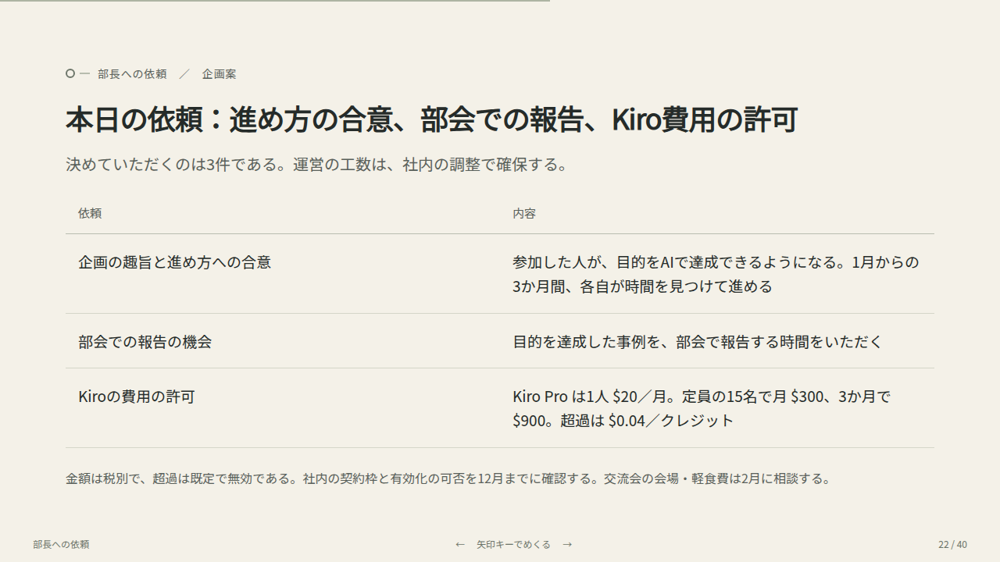
見出し 本日の依頼：進め方の合意、部会での報告、Kiro費用の許可
導入文 決めていただくのは3件である。運営の工数は、社内の調整で確保する。
本日お願いしたいのは3件です。
1件目は、この企画の趣旨と進め方へのご合意です。
参加した人が、目的をAIで達成できるようになることを目指すこと、1月からの3か月間、各自が時間を見つけて進めることの2点です。
2件目は、部会での報告の機会です。
目的を達成した事例を部会で報告できれば、やり方が組織の中で目に見える形になり、組織に根付くきっかけになります。
3件目は、Kiroの費用のご許可です。
Kiro Proは1人あたり月額20ドルで、1,000クレジットが含まれます。
15名では月300ドル、3か月で900ドルです。
金額は税別です。
プランの範囲を超えた分は1クレジットあたり0.04ドルで請求されますが、超過は既定で無効になっており、Kiroのコンソールで有効化しない限り発生しません。
社内の契約枠と、有効化の可否を12月までに確認します。
運営の工数は社内の調整で確保するため、本日のご依頼には含めていません。
交流会の会場と軽食の費用は、人数と会場が決まる2月に改めてご相談します。
| 観点の群 | 結果 | 見つけたこと | 直したこと |
|---|---|---|---|
| 論とストーリー | 修正 | 依頼が2件で、浸透に要る部会での報告を含まなかった | 部会での報告の機会を加え、3件にした |
付録の構成
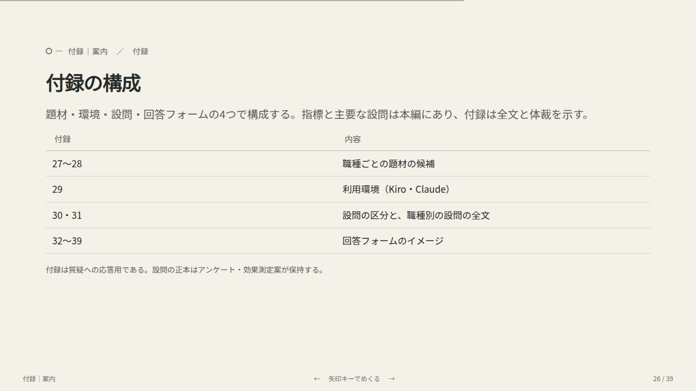
導入文 題材・環境・設問・回答フォームの4つで構成する。指標と主要な設問は本編にあり、付録は全文と体裁を示す。
ここから付録です。
付録は4つに分かれます。
職種ごとの題材の候補、利用環境、設問の区分と職種別の設問の全文、回答フォームのイメージです。
同じ体裁のフォームが続くため、必要な設問群から参照してください。
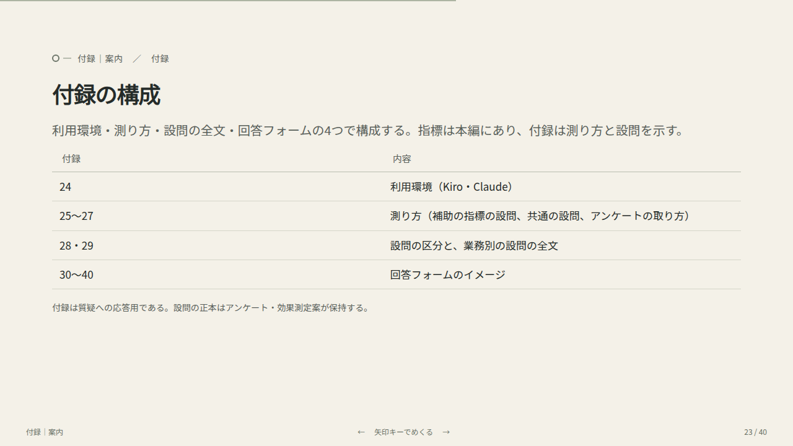
導入文 利用環境・測り方・設問の全文・回答フォームの4つで構成する。指標は本編にあり、付録は測り方と設問を示す。
ここから付録です。
付録は4つに分かれます。
利用環境、測り方、設問の区分と業務別の設問の全文、回答フォームのイメージです。
測り方には、補助の指標の設問、共通の設問、アンケートの取り方を置いています。
同じ体裁のフォームが続くため、必要な設問群から参照してください。
利用環境：Kiroが主、Claudeは補助
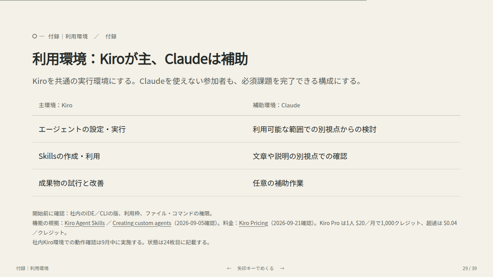
Kiro公式ドキュメントではAgent Skillsとカスタムエージェントの作成方法が説明されています。
ただし社内で導入済みの版と設定は未確認です。
初回教材を収録する前に参加者と同じ環境で、作成、読み込み、実行、結果確認までを試します。
教材は概念編と操作編に分け、機能更新時は操作編だけを差し替えられるようにします。
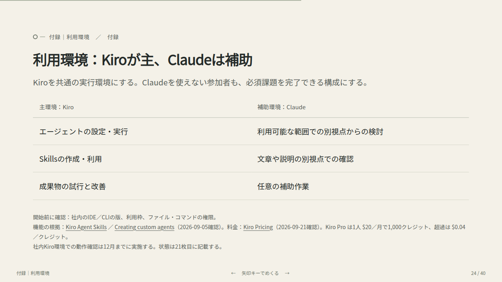
Kiro公式ドキュメントではAgent Skillsとカスタムエージェントの作成方法が説明されています。
ただし社内で導入済みの版と設定は未確認です。
初回教材を収録する前に参加者と同じ環境で、作成、読み込み、実行、結果確認までを試します。
教材は概念編と操作編に分け、機能更新時は操作編だけを差し替えられるようにします。
補助の指標の設問：回数や状態で答えられる形にする
この枚は新しく追加したものである。変更前には無い。
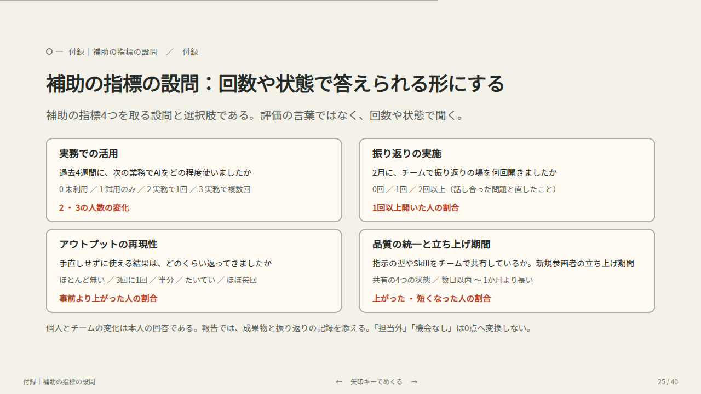
付録です。
補助の指標4つを取る設問と選択肢を示します。
1つ目は業務別のAI活用で、過去4週間に担当する業務でAIをどの程度使ったかを、0から3の4段階で聞きます。
実務利用にあたる2と3の人数の変化を確認します。
2つ目は振り返りの実施で、終了時に、2月にチームで振り返りの場を何回開いたかを聞き、話し合った問題と直したことも書いてもらいます。
3つ目はアウトプットの再現性で、この1か月、修正なしで使える出力がどのくらい返ってきたかを聞きます。
4つ目は品質の統一と立ち上げ期間で、指示の型やSkillをチームで共有しているかと、新規参画者や案件に入って間もない人が、仕事を始められるまでの期間を聞きます。
3つ目と4つ目は、始める前と終わった後に同じ設問で聞き、上がった人、短くなった人の割合を確認します。
本人の回答なので、報告では成果物と振り返りの記録を添えます。
共通の設問：今できることを聞く

共通項目は、仕事の中でできることを本人の言葉で答えられるようにしています。
使いどころ、困りごとの整理、AIへの依頼、複数作業の依頼、使い方の説明、答えの確認、感想をもとにした改善の7問です。
回答は0から4の5段階で、スライド右側の選択肢から、今の自分に近いものを選びます。
試す機会がない場合も選べます。
難しい概念の理解を問う試験にはせず、同じ質問で自己評価の変化を比べます。
実際の力は成果物や試用記録も合わせて確認します。
開始前に参加者に近い人に回答してもらい、意味が伝わるかを確認します。
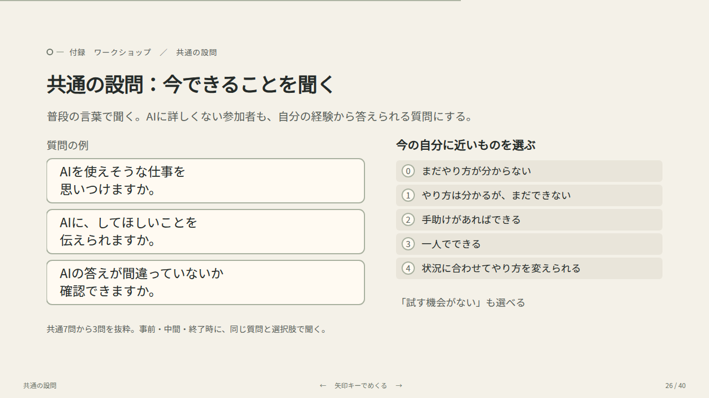
補助の指標のほかに、全員に聞く共通の設問です。
仕事の中でできることを本人の言葉で答えられるようにしています。
使いどころ、困りごとの整理、AIへの依頼、複数作業の依頼、使い方の説明、答えの確認、感想をもとにした改善の7問です。
回答は0から4の5段階で、スライド右側の選択肢から、今の自分に近いものを選びます。
試す機会がない場合も選べます。
難しい概念の理解を問う試験にはせず、同じ質問で自己評価の変化を比べます。
実際にできるかは、成果物やチームで使った記録も合わせて確認します。
開始前に参加者に近い人に回答してもらい、意味が伝わるかを確認します。
アンケートの取り方：Microsoft Forms 3本

導入文 回答するのは参加者だけである。事前・中間・終了時の3本に分け、同じ人の回答を突き合わせる。
アンケートの取り方です。
Microsoft Formsで実装し、事前・中間・終了時の3本に分けます。
回答するのは参加者だけです。
作ったものを使ってもらった相手には配りません。
相手に回答を依頼できないためです。
回答者名はFormsが組織アカウントから記録するので、氏名や番号の記入欄は設けません。
この回答者名で、3時点の回答を突き合わせます。
「1人1回」の設定が制限するのは1つのフォームにつき1回の回答なので、時点ごとにフォームを分けます。
回答フォームのイメージは付録に置いています。
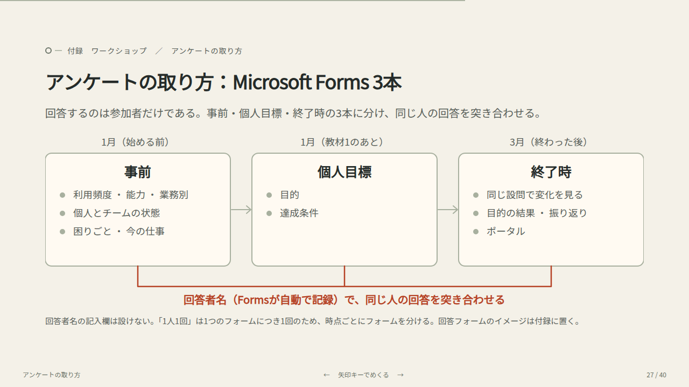
導入文 回答するのは参加者だけである。事前・個人目標・終了時の3本に分け、同じ人の回答を突き合わせる。
アンケートの取り方です。
Microsoft Formsで実装し、事前・個人目標・終了時の3本に分けます。
個人目標は、教材1を終えたあとに回答してもらいます。
回答するのは参加者だけです。
作ったものを使ってもらった相手には配りません。
相手に回答を依頼できないためです。
回答者名はFormsが組織アカウントから記録するので、氏名や番号の記入欄は設けません。
この回答者名で、3本の回答を突き合わせます。
「1人1回」の設定が制限するのは1つのフォームにつき1回の回答なので、時点ごとにフォームを分けます。
回答フォームのイメージは付録に置いています。
設問の構成：7つの区分

見出し 設問の構成：6つの区分
付録です。
設問は6つの群に分かれます。
利用頻度は実務でAIを使う頻度の変化、能力は自力でできる範囲の変化を見ます。
業務別は、どの業務で実務利用が生じたかを職種ごとに聞きます。
個人目標は開始時の達成条件と終了時の結果を照合します。
試用記録は、作者以外が使って役立ったかを聞くもので、主KPIの取得元です。
困りごとは支援の調整に使い、成果指標には含めません。
回答フォームのイメージは付録に置いています。
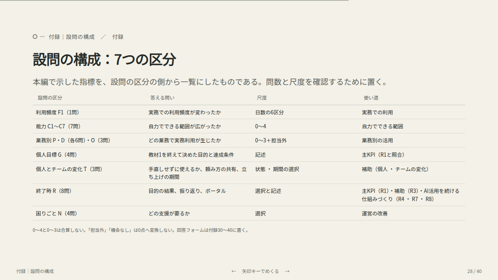
見出し 設問の構成：7つの区分
付録です。
設問は7つの群に分かれます。
利用頻度は実務でAIを使う頻度の変化、能力は自力でできる範囲の変化を確認します。
業務別は、どの業務で実務利用が生じたかを業務ごとに聞きます。
個人目標は、教材1を終えたあとに目的と達成条件を書いてもらうもので、終了時のR1と照合して主KPIに使います。
個人とチームの変化は、事前と終了時に同じ設問で聞き、補助の指標に使います。
終了時のR3は振り返りの実施で補助の指標に、R4の継続とR7 ・ R8のポータルは仕組みづくりの指標に使います。
困りごとは支援の調整に使い、成果指標には含めません。
回答フォームのイメージは付録に置いています。
業務別の設問：同じ選択肢で聞く

見出し 職種別の設問：同じ選択肢で聞く
導入文 職種ごとに担当業務を並べ、回答の選択肢は共通にする。質問：過去4週間に、次の業務でAIをどの程度使いましたか。
職種ごとの設問です。
PM・PLには情報収集・集計、報告・予実、課題・担当・期限、品質・障害・リスク、改善提案、過去事例の再利用の6項目を聞きます。
開発者には要求・仕様、設計、実装、レビュー、テスト、運用・保守の6項目を聞きます。
選択肢は両方とも同じで、0から3の4段階です。
担当していない業務と、担当しているが今回は機会が無かった場合は、0点へ変換せず別に扱います。
兼務している人は両方へ回答します。
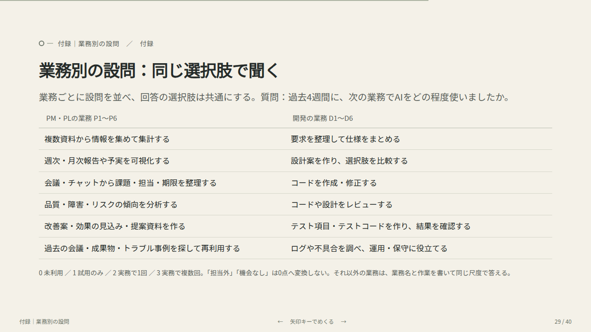
見出し 業務別の設問：同じ選択肢で聞く
導入文 業務ごとに設問を並べ、回答の選択肢は共通にする。質問：過去4週間に、次の業務でAIをどの程度使いましたか。
業務ごとの設問です。
PM・PLの業務では情報収集・集計、報告・予実、課題・担当・期限、品質・障害・リスク、改善提案、過去事例の再利用の6項目を聞きます。
開発の業務では要求・仕様、設計、実装、レビュー、テスト、運用・保守の6項目を聞きます。
それ以外の業務を担当する人は、業務名とAIを使った作業を書いて答えます。
選択肢はどれも同じで、0から3の4段階です。
担当していない業務と、担当しているが今回は機会が無かった場合は、0点へ変換せず別に扱います。
兼務している人は両方へ回答します。
回答フォーム：参加者情報と利用頻度

このページは「参加者情報・利用頻度」の回答イメージです。
利用頻度 F1。
実務でAIを使う頻度の変化を測定します。
部長報告の「実務での利用」に使用します。
左に質問、右に回答欄を示しています。
実際のフォームは別途作成し、参加者に近い人に試してもらってから確定します。
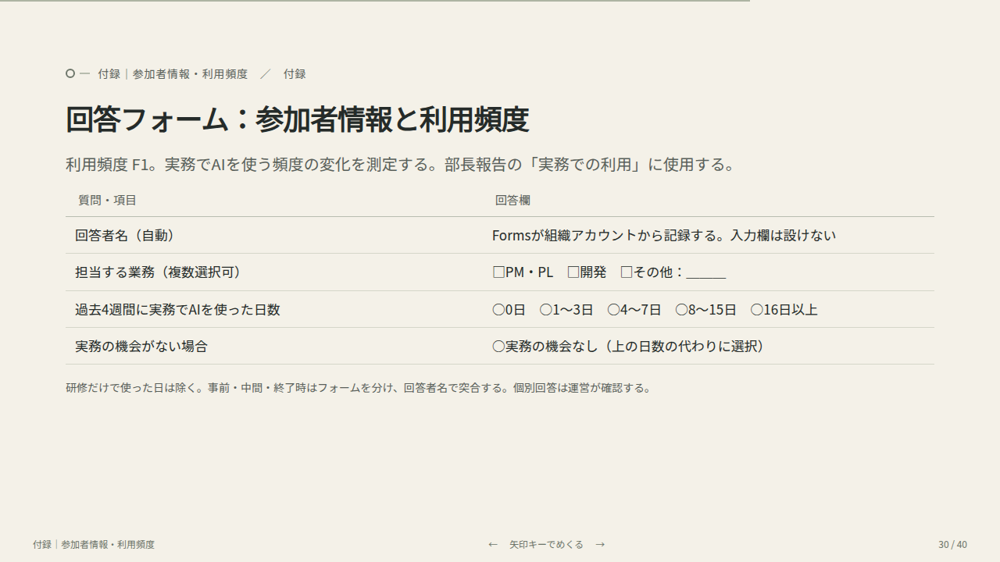
このページは「参加者情報・利用頻度」の回答イメージです。
利用頻度 F1。
実務でAIを使う頻度の変化を測定します。
部長報告の「実務での利用」に使用します。
左に質問、右に回答欄を示しています。
実際のフォームは別途作成し、参加者に近い人に試してもらってから確定します。
回答フォーム：共通アンケート①

このページは「共通アンケート①」の回答イメージです。
能力 C1〜C4。
課題の選択と、AIへの依頼に関する変化を測定します。
左に質問、右に回答欄を示しています。
実際のフォームは別途作成し、参加者に近い人に試してもらってから確定します。
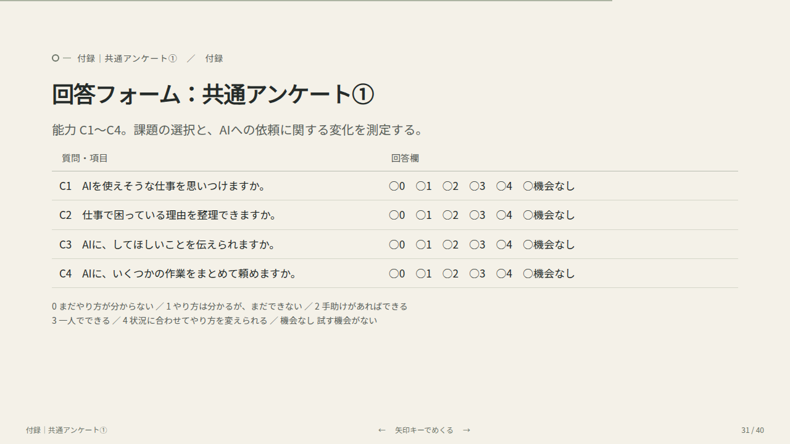
このページは「共通アンケート①」の回答イメージです。
能力 C1〜C4。
課題の選択と、AIへの依頼に関する変化を測定します。
左に質問、右に回答欄を示しています。
実際のフォームは別途作成し、参加者に近い人に試してもらってから確定します。
回答フォーム：共通アンケート②

このページは「共通アンケート②」の回答イメージです。
能力 C5〜C7。
説明・確認・改善に関する変化を測定します。
左に質問、右に回答欄を示しています。
実際のフォームは別途作成し、参加者に近い人に試してもらってから確定します。
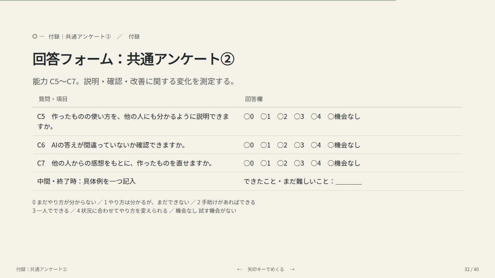
このページは「共通アンケート②」の回答イメージです。
能力 C5〜C7。
説明・確認・改善に関する変化を測定します。
左に質問、右に回答欄を示しています。
実際のフォームは別途作成し、参加者に近い人に試してもらってから確定します。
回答フォーム：個人とチームの変化（事前・終了時）
この枚は新しく追加したものである。変更前には無い。
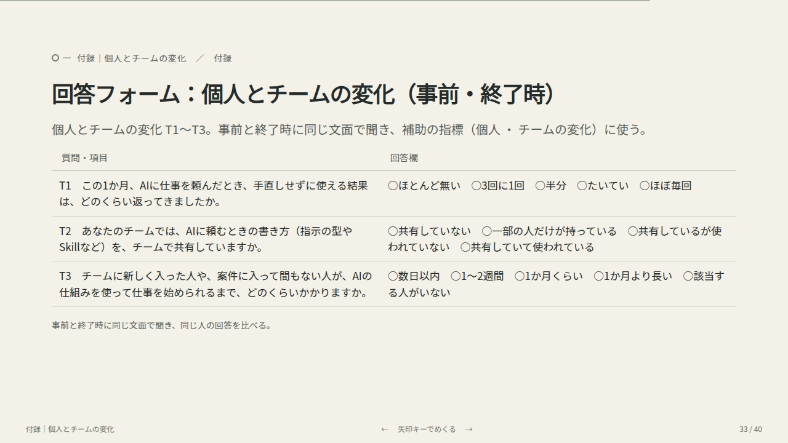
このページは「個人とチームの変化」の回答イメージです。
個人とチームの変化 T1〜T3。
事前と終了時に同じ文面で聞き、補助の指標（個人 ・ チームの変化）に使います。
左に質問、右に回答欄を示しています。
実際のフォームは別途作成し、参加者に近い人に試してもらってから確定します。
回答フォーム：PM・PLの業務

このページは「PM・PLの業務」の回答イメージです。
業務別 P1〜P6。
どの管理業務で実務利用が生じたかを確認します。
補助指標の取得元です。
左に質問、右に回答欄を示しています。
実際のフォームは別途作成し、参加者に近い人に試してもらってから確定します。
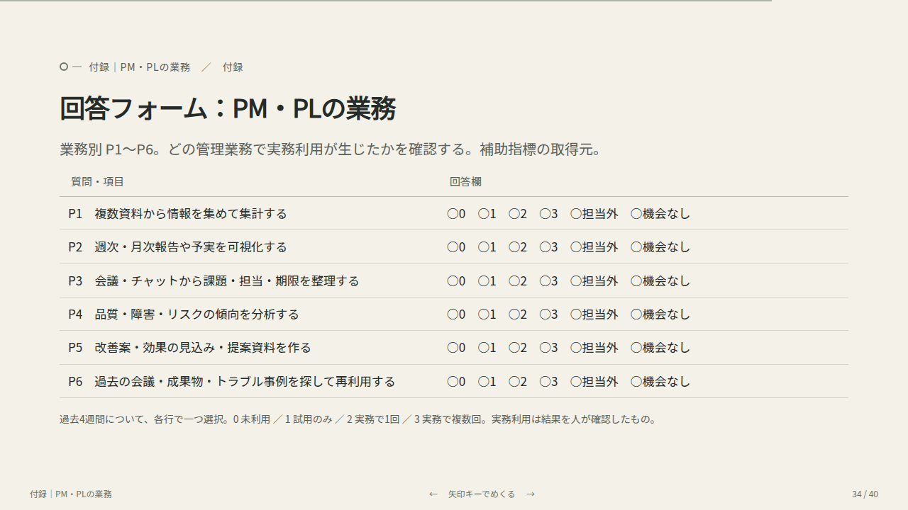
このページは「PM・PLの業務」の回答イメージです。
業務別 P1〜P6。
どの管理業務で実務利用が生じたかを確認します。
補助指標の取得元です。
左に質問、右に回答欄を示しています。
実際のフォームは別途作成し、参加者に近い人に試してもらってから確定します。
回答フォーム：開発の業務
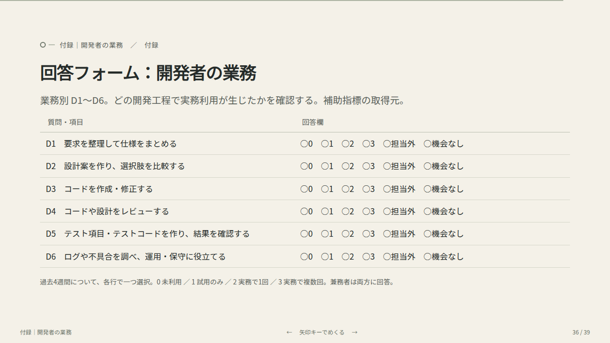
見出し 回答フォーム：開発者の業務
このページは「開発者の業務」の回答イメージです。
業務別 D1〜D6。
どの開発工程で実務利用が生じたかを確認します。
補助指標の取得元です。
左に質問、右に回答欄を示しています。
実際のフォームは別途作成し、参加者に近い人に試してもらってから確定します。
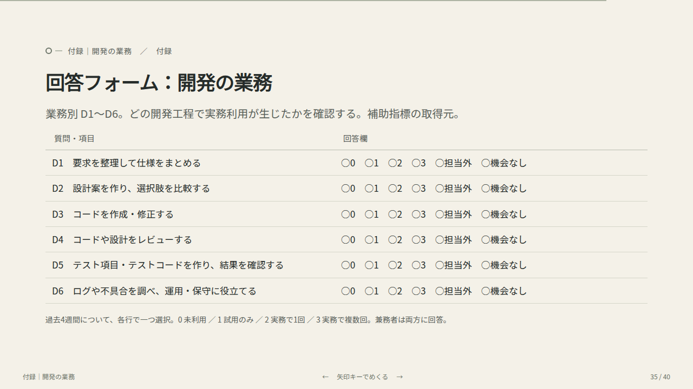
見出し 回答フォーム：開発の業務
このページは「開発の業務」の回答イメージです。
業務別 D1〜D6。
どの開発工程で実務利用が生じたかを確認します。
補助指標の取得元です。
左に質問、右に回答欄を示しています。
実際のフォームは別途作成し、参加者に近い人に試してもらってから確定します。
回答フォーム：その他の業務
この枚は新しく追加したものである。変更前には無い。
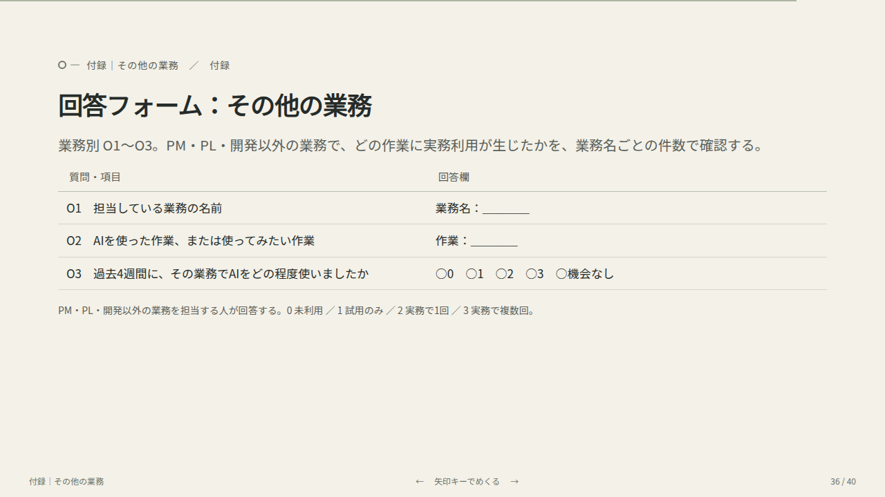
このページは「その他の業務」の回答イメージです。
業務別 O1〜O3。
PM・PL・開発以外の業務で、どの作業に実務利用が生じたかを、業務名ごとの件数で確認します。
左に質問、右に回答欄を示しています。
実際のフォームは別途作成し、参加者に近い人に試してもらってから確定します。
回答フォーム：個人目標
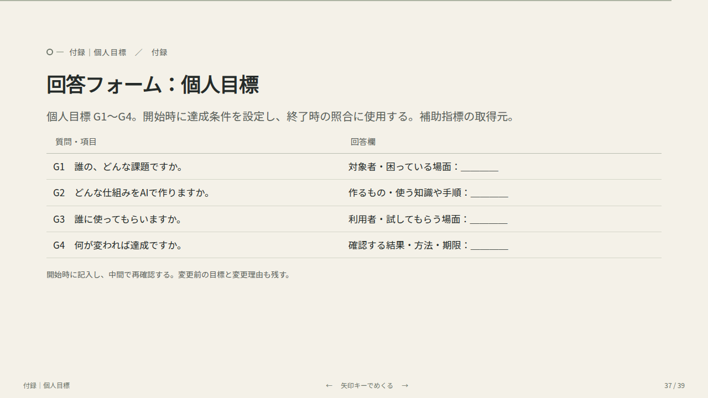
導入文 個人目標 G1〜G4。開始時に達成条件を設定し、終了時の照合に使用する。補助指標の取得元。
このページは「個人目標」の回答イメージです。
個人目標 G1〜G4。
開始時に達成条件を設定し、終了時の照合に使用します。
補助指標の取得元です。
左に質問、右に回答欄を示しています。
実際のフォームは別途作成し、参加者に近い人に試してもらってから確定します。
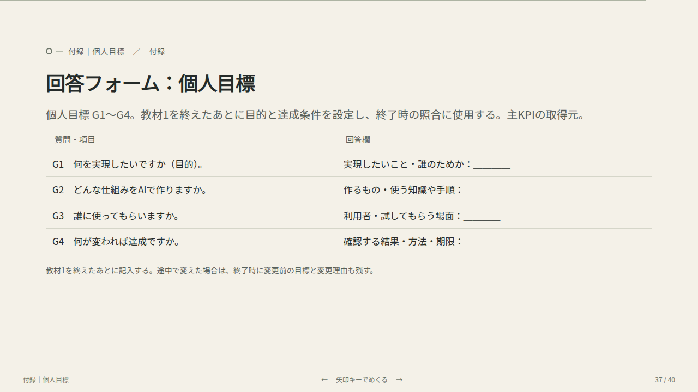
導入文 個人目標 G1〜G4。教材1を終えたあとに目的と達成条件を設定し、終了時の照合に使用する。主KPIの取得元。
このページは「個人目標」の回答イメージです。
個人目標 G1〜G4。
教材1を終えたあとに目的と達成条件を設定し、終了時の照合に使用します。
主KPIの取得元です。
左に質問、右に回答欄を示しています。
実際のフォームは別途作成し、参加者に近い人に試してもらってから確定します。
回答フォーム：困りごと・支援
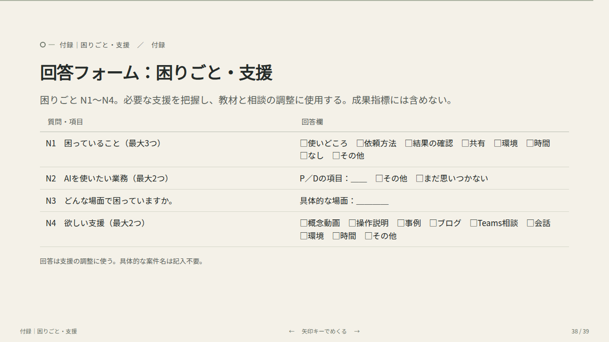
このページは「困りごと・支援」の回答イメージです。
困りごと N1〜N4。
必要な支援を把握し、教材と相談の調整に使用します。
成果指標には含めません。
左に質問、右に回答欄を示しています。
実際のフォームは別途作成し、参加者に近い人に試してもらってから確定します。
このページは「困りごと・支援」の回答イメージです。
困りごと N1〜N4。
必要な支援を把握し、教材と相談の調整に使用します。
成果指標には含めません。
左に質問、右に回答欄を示しています。
実際のフォームは別途作成し、参加者に近い人に試してもらってから確定します。
回答フォーム：終了時の振り返り

導入文 終了時 R1〜R6。作ったものと、使ってもらった結果を記録する。主KPIの取得元。
このページは「終了時・作者」の回答イメージです。
終了時 R1〜R6。
作ったものと、使ってもらった結果を記録します。
主KPIの取得元です。
左に質問、右に回答欄を示しています。
実際のフォームは別途作成し、参加者に近い人に試してもらってから確定します。
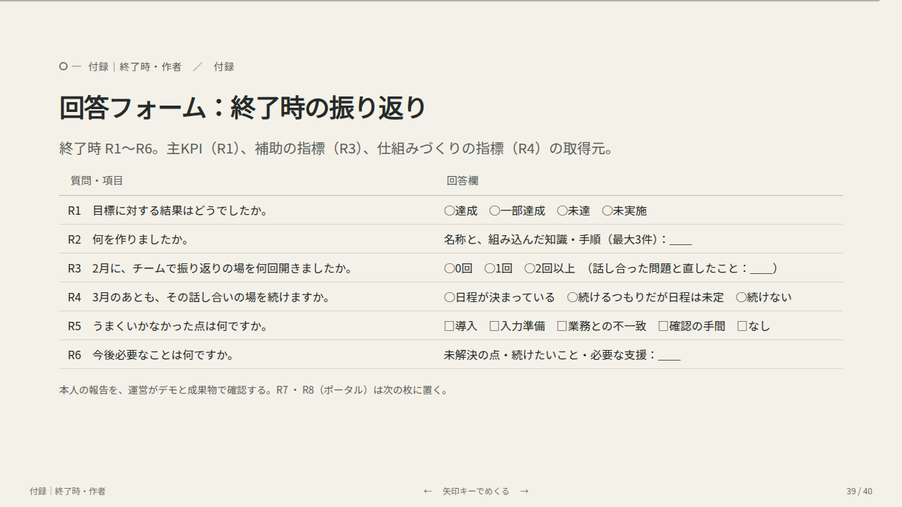
導入文 終了時 R1〜R6。主KPI（R1）、補助の指標（R3）、仕組みづくりの指標（R4）の取得元。
このページは「終了時・作者」の回答イメージです。
終了時 R1〜R6。
主KPI（R1）、補助の指標（R3）、仕組みづくりの指標（R4）の取得元です。
左に質問、右に回答欄を示しています。
実際のフォームは別途作成し、参加者に近い人に試してもらってから確定します。
回答フォーム：ポータル（終了時）
この枚は新しく追加したものである。変更前には無い。
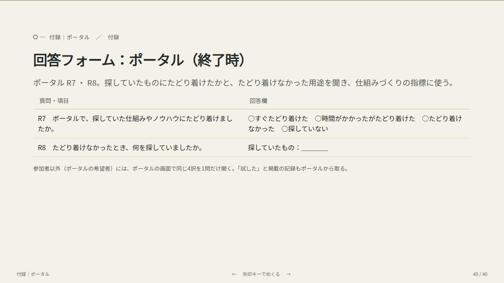
このページは「ポータル」の回答イメージです。
ポータル R7 ・ R8。
探していたものにたどり着けたかと、たどり着けなかった用途を聞き、仕組みづくりの指標に使います。
左に質問、右に回答欄を示しています。
実際のフォームは別途作成し、参加者に近い人に試してもらってから確定します。
オリエンテーション
下期AI活用ワークショップ
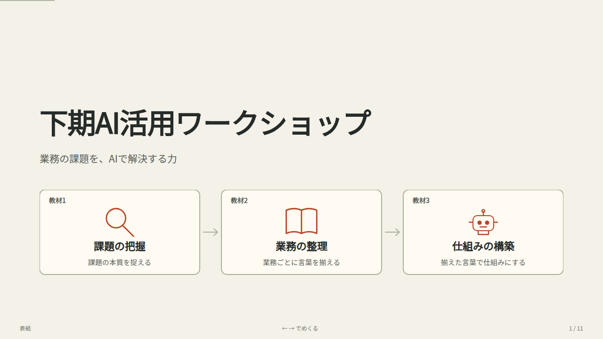
導入文 業務の課題を、AIで解決する力
導入文 目的を、AIで達成する力
| 観点の群 | 結果 | 見つけたこと | 直したこと |
|---|---|---|---|
| スライドと原稿の整合 | 修正 | 副題が「業務の課題を、AIで解決する力」、3枚のカードが旧名（課題の把握 ・ 業務の整理）のままだった | 副題を「目的を、AIで達成する力」、カードを論点2の案（目的の把握 ・ 言葉の定義 ・ 仕組みの構築）にした |
このワークショップで身につけるのは、目的をAIで達成する力です

見出し このワークショップで身につけるのは、課題をAIで解決する力です
はじめに、このワークショップで何を身につけていただくのかをお話しします。
業務でAIを使う人は、増えてきました。
ただ、チームとして使いこなせているかというと、まだそうなっていない職場が多いのではないでしょうか。
同じ作業をAIに頼んでも、人によって、AIへの指示、いわゆるプロンプトの書き方が違い、返ってくるものも違います。
うまくいった指示があっても、それを知っているのは書いた本人だけです。
その結果、AIを使うノウハウは個人の手元に留まり、チームで共有されません。
では、このノウハウをチームで共有するには、何が必要でしょうか。
このワークショップでは、3つの段階を順に上がることだと考えています。
3つの段階は、そのまま3つの教材になっています。
1段目は、教材1、課題の把握です。
AIに頼む前に、業務の課題の本質を捉えて、言葉にできるようになります。
2段目は、教材2、業務の整理です。
同じ言葉が業務ごとに違うものを指していることを確かめて、業務ごとに言葉を揃えられるようになります。
3段目は、教材3、仕組みの構築です。
揃えた言葉で、AIが課題を解決する仕組みを作れるようになります。
仕組みになっていれば、書いた本人でなくても、同じように使えます。
ここまで上がれば、個人が持っていたノウハウを、チームで共有できるようになります。
この3つの段階を上がれる力を、このワークショップでは、課題をAIで解決する力と呼びます。
3つの教材を通して、この力を身につけていただきます。
見出し このワークショップで身につけるのは、目的をAIで達成する力です
はじめに、このワークショップで何を身につけていただくのかをお話しします。
業務でAIを使う人は、増えてきました。
ただ、チームとして使いこなせているかというと、まだそうなっていない職場が多いのではないでしょうか。
同じ作業をAIに頼んでも、人によって、AIへの指示、いわゆるプロンプトの書き方が違い、返ってくるものも違います。
うまくいった指示があっても、それを知っているのは書いた本人だけです。
その結果、AIを使うノウハウは個人の手元に留まり、チームで共有されません。
では、このノウハウをチームで共有するには、何が必要でしょうか。
このワークショップでは、3つの教材を順に学ぶことだと考えています。
前の教材で決めたことを、次の教材で前提にします。
1つ目は、教材1、目的の把握です。
AIに頼む前に、何のために頼むのか、その目的を捉えて、AIへの指示に書けるようになります。
2つ目は、教材2、言葉の定義です。
同じ言葉が業務ごとに違うものを指していることを確かめて、その言葉が何を指すかを定められるようになります。
3つ目は、教材3、仕組みの構築です。
ここまでに決めたことを、目的から外れない仕組みにできるようになります。
仕組みになっていれば、書いた本人でなくても、誰が頼んでも同じように使えます。
この3つの教材を終えると、目的をAIで達成する力が身につきます。
| 観点の群 | 結果 | 見つけたこと | 直したこと |
|---|---|---|---|
| スライドと原稿の整合 | 修正 | 「目的に合った高さで指示に書ける」の「高さ」は、オリエンテーションで説明しない語だった | 「目的を捉えて、AIへの指示に書けるようになります」にした。I0-S4 の原稿と I0-S5 の図も同じ方針で修正した |
| 論とストーリー | 修正 | 身につける力が「課題をAIで解決する力」で、3段の説明も課題を軸にしていた | 見出し ・ 帯 ・ 原稿を「目的をAIで達成する力」にし、3段を 目的を捉え指示に書く → 言葉が何を指すかを定める → 目的から外れない仕組みにする、で記述した。到達点の注記も「誰が頼んでも、目的をAIで達成できる」にした |
| 日本語 | 修正 | 原稿の最後の3文が見出しの言い直しを繰り返し、「〜と呼びます」で見出しの主張に名前を付け直していた。「上がれる力」も不自然だった | 最後を「この3つの段階を上がると、目的をAIで達成する力が身につきます」の1文にし、帯も同じ言い回しにした |
1つの案件に、3つの業務が関わっています
変更なし ── 開いて見る
ここからは、3つの教材を通して使う、1つの案件を題材に話を進めます。
経費精算システムを入れ替える案件です。
本番の切り替えは、3か月後と決まっています。
この案件には、3つの業務が関わっています。
1つめは、経費の精算業務です。
経理が、日々の精算と支払を担当しています。
2つめは、案件の進行管理です。
PMが、本番の切り替えまで案件が止まらないように進めています。
3つめは、システムの開発です。
開発が、新しいシステムの画面や、周辺のシステムとの連携を作っています。
この3つの業務の担当者が、週に1回、定例に集まります。
定例で決まったことと、まだ決まっていないことは、書記が議事録にまとめます。
この議事録が、教材1でAIに渡すものになります。
PMは、業務ごとの課題が進行にどう影響するかを判断しています

この案件で、PMが毎週どんな仕事をしているかを見てみます。
定例では、それぞれの業務の立場から課題が挙がります。
経理からは、締め日の運用を変えないと、月末の支払が回らなくなる、という課題が出ます。
開発からは、既存システムとの連携の仕様が決まらないので、作り始められない、という課題が出ます。
同じ課題という言葉ですが、経理が言っているのは日々の精算が止まることで、開発が言っているのは実装が進まないことです。
PMが知りたいのは、そのどちらでもありません。
案件の進行が止まるかどうかです。
そこでPMは定例のあと、議事録を読み返して、挙がった課題を1件ずつ読み解きます。
それが案件の進行にどう影響するのか。
いつまでに、誰が決めないと、どの作業が止まるのか。
たとえば連携の仕様は、9月16日までに開発が決めないと、連携の開発を始められません。
締め日は、9月30日までに経理が決めないと、運用の準備が進みません。
それなら、連携の仕様を先に決める、と判断します。
こうして1件ずつ、次に何を、いつまでに、誰が決めればいいのかを判断し、スケジュールと照らして、どれから決めるかの優先順位を付けます。
遅れが見えれば、スケジュールを引き直し、工数を見積もり、要員を調整し、必要なら業務部門にも相談します。
この一連の作業に、毎週かなりの時間がかかっています。
これが、いま困っていることです。
この案件で、PMが毎週どんな仕事をしているかを見てみます。
定例では、それぞれの業務の立場から課題が挙がります。
経理からは、締め日の運用を変えないと、月末の支払が回らなくなる、という課題が出ます。
開発からは、既存システムとの連携の仕様が決まらないので、作り始められない、という課題が出ます。
同じ課題という言葉ですが、経理が言っているのは日々の精算が止まることで、開発が言っているのは実装が進まないことです。
PMが知りたいのは、そのどちらでもありません。
案件の進行が止まるかどうかです。
そこでPMは定例のあと、議事録を読み返して、挙がった課題を1件ずつ読み解きます。
それが案件の進行にどう影響するのか。
いつまでに、誰が決めないと、どの作業が止まるのか。
たとえば連携の仕様は、9月16日までに開発が決めないと、連携の開発を始められません。
締め日は、9月30日までに経理が決めないと、運用の準備が進みません。
それなら、連携の仕様を先に決める、と判断します。
こうして1件ずつ、次に何を、いつまでに、誰が決めればいいのかを判断し、スケジュールと照らして、どれから決めるかの優先順位を付けます。
遅れが見えれば、スケジュールを引き直し、工数を見積もり、要員を調整し、必要なら業務部門にも相談します。
この一連の作業の目的は、どれから決めるかの優先順位を付けて、案件を止めないことです。
ただ、その目的のために、毎週かなりの時間がかかっています。
議事録を渡してAIに任せられれば短くなるはずですが、いまはまだ任せられていません。
| 観点の群 | 結果 | 見つけたこと | 直したこと |
|---|---|---|---|
| 論とストーリー | 修正 | PMが手で議事録を読み返す場面で終わり、AIとの関係と、PMの目的を記述していなかった | PMの目的（優先順位を付けて案件を止めない）を明示し、「AIに任せたいが、まだ任せられていない」で次の枚へ接続した |
時間がかかる原因は、判断の基準がPMの頭の中にしかないことです
導入文 手間がかかっているのは、議事録から書き出す作業ではなく、その前の判断である。
時間がかかる、というだけでは、何を用意すれば短くなるのかが分かりません。
そこで、なぜ時間がかかるのかを掘り下げます。
手間がかかっているのは、書き出す作業そのものではありません。
それぞれの業務の言葉で挙がった課題を汲み取り、案件の進行にとって何を意味するのかを判断するところです。
どれが次に決めるべきことで、どれがそうでないのか。
いつまでに、誰が決めればいいのか。
PMはその判断を、議事録とスケジュールと自分の記憶を突き合わせながら、毎回その場でしています。
判断の基準が、PMの頭の中にしかないのです。
これが、この場面での課題の本質です。
基準が頭の中にしかないと、2つのことが起きます。
1つは、PM自身が毎回その場で考え直すことになり、時間がかかることです。
もう1つは、その判断をほかの人に渡せないことです。
PMの補佐に任せたくても、後任に引き継ぎたくても、何を基準にしているのかを伝えられません。
任された人は自分なりの基準で課題を選ぶので、選ばれる課題も、並ぶ順番も変わってしまいます。
はじめに、人によってAIへの指示の書き方が違い、返ってくるものも違う、とお話ししました。
その原因も、ここにあります。
基準が言葉になっていないので、指示に何を書くかが人によって変わるのです。
では、何があれば解決するのか。
PMの頭の中にある基準を、言葉にしておくことです。
言葉になっていれば、補佐にも後任にも渡せますし、AIへの指示にも書けます。
この基準は、2つの部分でできています。
1つは、PMにとっての課題の捉え方です。
何を課題として取り上げ、何を添え、どの順に並べるか。
もう1つは、それぞれの業務の言葉の読み方です。
経理や開発が言う課題が、何を指しているのか。
そこで、このワークショップは3つの段階で進めます。
まず、PMにとっての課題の捉え方を言葉にして、AIへの指示に書く。
次に、業務ごとに違う言葉の中身を確かめて、揃える。
最後に、それを誰が使っても同じように動く仕組みにする。
この3つの段階が、そのまま3つの教材になります。
3つの教材とも、いまの場面を題材にして進めていきます。
導入文 時間がかかっているのは、議事録から書き出す作業ではなく、その前の判断である。
では、なぜ時間がかかり、AIにも任せられないのでしょうか。
時間がかかっているのは、書き出す作業そのものではありません。
それぞれの業務の言葉で挙がった課題を汲み取り、案件の進行にとって何を意味するのかを判断するところです。
どれが次に決めるべきことで、どれがそうでないのか。
いつまでに、誰が決めればいいのか。
PMはその判断を、議事録とスケジュールと自分の記憶を突き合わせながら、毎回その場でしています。
判断の基準が、PMの頭の中にしかないのです。
これが、時間がかかる本当の原因です。
基準が頭の中にしかないと、2つのことが起きます。
1つは、PM自身が毎回その場で考え直すことになり、時間がかかることです。
もう1つは、その判断をほかの人に渡せないことです。
PMの補佐に任せたくても、後任に引き継ぎたくても、何を基準にしているのかを伝えられません。
任された人は自分なりの基準で課題を選ぶので、選ばれる課題も、並ぶ順番も変わってしまいます。
はじめに、人によってAIへの指示の書き方が違い、返ってくるものも違う、とお話ししました。
その原因も、ここにあります。
基準が言葉になっていないので、指示に何を書くかが人によって変わるのです。
では、何があれば解決するのか。
PMの頭の中にある基準を、言葉にしておくことです。
言葉になっていれば、補佐にも後任にも渡せますし、AIへの指示にも書けます。
この基準は、2つの部分でできています。
1つは、課題を整理する目的です。
どれから決めるか、優先順位を付けるために整理する、ということです。
目的が決まれば、どの課題を選び、どの順に並べるかも決まります。
もう1つは、それぞれの業務の言葉が指すものです。
経理や開発が言う課題が、何を指しているのか。
この2つを言葉にし、最後に、誰が使っても同じように動く仕組みにする。
はじめにお話しした3つの教材は、この順になっています。
3つの教材とも、いまの場面を題材にして進めていきます。
| 観点の群 | 結果 | 見つけたこと | 直したこと |
|---|---|---|---|
| 論とストーリー | 修正 | 「これが、この場面での課題の本質です」と、基準の1つ目「PMにとっての課題の捉え方」が、課題を軸にしていた。3段階の説明も「揃える」のままだった | 「時間がかかる本当の原因です」に変更し、基準の1つ目を「課題を整理する目的」にした（図は「整理の目的」）。目的が決まれば、どの課題を選び、どの順に並べるかも決まる、と説明した。3段階の説明は I0-S0A と同じ語にした |
| 論とストーリー | 修正 | 前の枚の「次に掘り下げます」と、この枚の「掘り下げます」が重複していた。3つの段階の説明が I0-S0A の繰り返しだった | 前の枚の予告を削除し、冒頭を「では、なぜ時間がかかり、AIにも任せられないのでしょうか」にした。3つの段階は「はじめにお話しした3つの段階は、この順になっています」と参照する形にした |
| 日本語 | 修正 | 「PMの目的」はPMという職務の目的と読める。「何を取り上げ、何を添え」も不自然だった | 「課題を整理する目的」「どの課題を選び、どの順に並べるか」にした。I0-S0B ・ I0-S3B の「PMの目的」も同じ方針で修正した |
| 図の表現 | 修正 | 補佐 ・ 後任 ・ AIへの線に矢じりが無く、矢印に見えなかった。左の枠だけ灰色の地で、人のアイコンの顔が白く浮いていた。左右の対比なのに部品の置き方が違った | 左右を同じ地 ・ 同じ部品 ・ 同じ位置にそろえた。左右とも矢印を受け手まで伸ばし、受け手の名前の右に、左は×、右は✓を置いた。左の矢印は点線、右は実線にした。基準の2つ目は「言葉が指すもの」にした |
業務は、いくつもの作業でできています

では、教材1はこの場面のどこから始めるのか。
それを決めるために、業務をもう一段細かく見ます。
PMが受け持っているのは、案件の進行管理です。
本番の切り替えまで、案件を止めずに進める。
これがこの業務の目的です。
ただ、案件を進める、というだけでは大きすぎて、何をするのかが決まりません。
さきほどの場面で、PMがしていたことを思い出してください。
課題を整理する、スケジュールを引き直す、工数を見積もる、要員を調整する。
実際にPMがしているのは、こうした、もっと小さい単位の仕事です。
この1つずつを、作業と呼びます。
作業どうしは、前の作業の結果を次の作業が受け取る形でつながっています。
課題を整理した結果の課題管理表を受け取って、スケジュールを引き直す、という具合です。
業務は、いくつもの作業でできています。
経理にも、開発にも、それぞれの業務があり、それぞれの作業が並んでいます。
経理なら、申請を受け付ける、内容を確認する、支払を処理する。
開発なら、仕様を決める、画面を作る、連携を試験する、といった作業です。

では、教材1はこの場面のどこから始めるのか。
それを決めるために、業務をもう一段細かく見ます。
PMが受け持っているのは、案件の進行管理です。
本番の切り替えまで、案件を止めずに進める。
これがこの業務の目的です。
ただ、案件を進める、というだけでは大きすぎて、何をするのかが決まりません。
さきほどの場面で、PMがしていたことを思い出してください。
課題を整理する、スケジュールを引き直す、工数を見積もる、要員を調整する。
実際にPMがしているのは、こうした、もっと小さい単位の仕事です。
この1つずつを、作業と呼びます。
作業どうしは、前の作業の結果を次の作業が受け取る形でつながっています。
課題を整理した結果の課題管理表を受け取って、スケジュールを引き直す、という具合です。
業務は、いくつもの作業でできています。
経理にも、開発にも、それぞれの業務があり、それぞれの作業が並んでいます。
経理なら、申請を受け付ける、内容を確認する、支払を処理する。
開発なら、仕様を決める、画面を作る、連携を試験する、といった作業です。
AIに頼むときも、1回の依頼の単位になるのは、この作業です。
| 観点の群 | 結果 | 見つけたこと | 直したこと |
|---|---|---|---|
| 論とストーリー | 修正 | 業務と作業の説明だけで、AIとの関係を記述していなかった | 「AIに頼むときも、1回の依頼の単位はこの作業」を1文追加した。理由は次の I0-S3 が説明する |
教材1は、目的がはっきりする1つの作業から始めます
見出し 教材1は、そのうちの1つの作業から始めます
導入文 作業まで絞ると、何を渡し、何を返してもらうかが決まる。だからAIに頼める。
教材1では、このうち、課題を整理する、という作業を取り上げます。
実際の案件では、課題は定例だけでなく、日々のやり取りのあちこちから挙がってきます。
ここでは話を分かりやすくするために、定例の議事録だけを対象にします。
PMが議事録を読んで、次に決めなければならないことを特定し、いつまでに誰が決めるかを添えて、課題管理表にまとめる。
これが、教材1で扱う作業です。
この課題管理表ができれば、どの課題から決めるかの優先順位が分かります。
PMはそれを受け取って、次の作業でスケジュールを引き直します。
誰が、何のためにするのか。
何を渡し、何を返してもらうのか。
この4つは、このあと指示を書くときの前提になります。
では、なぜ業務全体ではなく、この1つの作業から始めるのでしょうか。
業務全体のままでは、AIに何を頼めばいいかが決まらないからです。
本番まで案件を止めずに進めて、とAIに頼んでも、AIの側は何を返せばいいのかが決まりません。
課題を整理する、という作業まで絞ると、頼むことがはっきりします。
議事録を渡して、課題管理表を返してもらう、ということです。
返ってきた課題管理表で、そのまま優先順位を付けられるか。
それを見れば、うまくいったかどうかも判断できます。
ですから、教材1はこの作業から始めます。
そして最後まで、この1つの作業だけを使って進めます。
見出し 教材1は、目的がはっきりする1つの作業から始めます
導入文 作業まで絞ると、目的が指示に書ける大きさになる。だからAIに頼める。
教材1、目的の把握では、このうち、課題を整理する、という作業を取り上げます。
実際の案件では、課題は定例だけでなく、日々のやり取りのあちこちから挙がってきます。
ここでは話を分かりやすくするために、定例の議事録だけを対象にします。
PMが議事録を読んで、次に決めなければならないことを特定し、いつまでに誰が決めるかを添えて、課題管理表にまとめる。
これが、教材1で扱う作業です。
この作業の目的は、どの課題から決めるか、優先順位を付けることです。
PMは課題管理表を受け取って、次の作業でスケジュールを引き直します。
誰が、何のためにするのか。
何を渡し、何を返してもらうのか。
この4つは、このあと指示を書くときの前提になります。
中でも大事なのは、何のために、つまり目的です。
では、なぜ業務全体ではなく、この1つの作業から始めるのでしょうか。
業務全体のままでは、目的が大きすぎて、AIに何を頼めばいいかが決まらないからです。
本番まで案件を止めずに進めて、という業務の目的をそのままAIに頼んでも、AIの側は何を返せばいいのかが決まりません。
課題を整理する、という作業まで絞ると、目的は、優先順位を付けること、と1行で指示に書けます。
目的がはっきりすると、渡すものと返してもらうものも決まります。
議事録を渡して、課題管理表を返してもらう、ということです。
返ってきた課題管理表で、そのまま優先順位を付けられるか。
目的に照らせば、うまくいったかどうかも判断できます。
ですから、教材1はこの作業から始めます。
そして最後まで、この1つの作業だけを使って進めます。
| 観点の群 | 結果 | 見つけたこと | 直したこと |
|---|---|---|---|
| 論とストーリー | 修正 | 教材1の名前（目的の把握）が出てこず、作業まで絞る理由が「渡すもの ・ 返すものが決まる」だけだった | 見出しを「教材1は、目的がはっきりする1つの作業から始めます」にし、絞る理由を「業務の目的は大きすぎて指示に書けない。作業まで絞ると目的がはっきりする」と説明した。図は「何のために」の行を強調し、対比の見出しを「業務の目的のまま ／ 作業の目的にすると」にした |
| 表示の不良と読みやすさ | 修正 | 右の2つの枠の高さ（98と134）・地の色・部品の位置がそろっておらず、上下の釣り合いが取れていなかった | 2つの枠を同じ高さ ・ 同じ地にし、入力 ・ AI ・ 出力 ・ 結果の行（× ／ ✓）を同じ位置に置いた |
教材2は、言葉が何を指すかを定め、AIへの指示に書きます
見出し 教材2は、3つの業務の言葉を、業務ごとに揃えます
導入文 教材1で作れる課題管理表では、期限と優先順位にまだ裏付けが無い。
教材2は、業務の整理です。
教材1の終わりには、PMから見た課題管理表ができます。
たとえば、9月16日までに、開発が連携の仕様を決める。
9月30日までに、経理が申請の締め日を決める。
そうした行が、期限の順に並びます。
ただ、この表には、決めるのにどれだけの手間がかかるのか、決まらなかったときにどんな影響が出るのかが入っていません。
期限も、定例でそれぞれの業務が言った日付を、そのまま写したものです。
これでは、その期限が守れるのかも、どの課題を先に決めるべきなのかも、PMには判断できません。
手間と影響が分からないのは、それぞれの業務で、課題という言葉が何を指しているのかを見ていないからです。
開発にとっての課題は、実装が進まない要因です。
経理にとっての課題は、日々の精算が止まる要因です。
教材2では、経費の精算業務、案件の進行管理、システムの開発の3つの業務で、言葉が何を指しているのかを確かめ、業務ごとに揃えます。
その業務の言葉で課題を読めるようになると、手間と影響が分かり、期限と優先順位に裏付けが付きます。
この考え方には名前があります。
その名前は、教材2の中で紹介します。
見出し 教材2は、言葉が何を指すかを定め、AIへの指示に書きます
導入文 AIが返す課題管理表では、期限と優先順位にまだ裏付けが無い。
教材2は、言葉の定義です。
教材1の終わりには、議事録を渡すと、AIが課題管理表を返すようになります。
たとえば、9月16日までに、開発が連携の仕様を決める。
9月30日までに、経理が申請の締め日を決める。
そうした行が、期限の順に並びます。
ただ、この表には、それぞれの課題を決めるのにどれだけの工数がかかるのか、決まるのが遅れたら何が止まるのかが入っていません。
期限も、定例でそれぞれの業務が言った日付を、そのまま写したものです。
これでは、その期限が守れるのかも、どの課題を先に決めるべきなのかも、PMには判断できません。
優先順位を付けるという目的には、まだ届いていないのです。
原因は、言葉の定義にあります。
開発にとっての課題は、実装が進まない要因です。
経理にとっての課題は、日々の精算が止まる要因です。
同じ課題という言葉が、業務ごとに何を指しているのかをAIが知らないと、AIは、それぞれの課題を決める工数も、遅れたときに何が止まるのかも読み取れません。
だから、工数と遅延時の影響の列が埋まらないのです。
教材2では、経費の精算業務、案件の進行管理、システムの開発の3つの業務を例に、それぞれの言葉が何を指しているのかを確かめて定め、AIへの指示に書きます。
AIがそれぞれの業務の言葉を読み分けられるようになると、工数と遅延時の影響が埋まり、期限と優先順位に裏付けが付きます。
この考え方には名前があります。
その名前は、教材2の中で紹介します。
| 観点の群 | 結果 | 見つけたこと | 直したこと |
|---|---|---|---|
| 論とストーリー | 修正 | 「業務ごとに言葉を揃える」とだけ説明し、揃えた言葉をAIへの指示に使うことを記述していなかった | 見出し ・ 原稿 ・ 図の3か所を「言葉が何を指すかを定め、AIへの指示に書く」に変更した。課題管理表もAIが返すものとして記述した |
| 論とストーリー | 修正 | 手間と影響が欠けていることが、目的とどう関係するかを記述していなかった | 「優先順位を付けるという目的には、まだ届いていない」を追加した |
| 論とストーリー | 修正 | 言葉を定めることが、なぜ目的に必要かを記述していなかった | 「同じ課題という言葉が、業務ごとに別のものを指したままだと、AIは経理の課題も開発の課題も同じように拾い、PMの目的から外れたものを返します」を追加した |
| 論とストーリー | 修正 | 「AIは経理の課題も開発の課題も同じように拾い、目的から外れたものを返します」は、教材1の結果（PMの課題だけが返る）と矛盾していた | 「業務ごとに何を指しているのかをAIが知らないと、それぞれの課題がその業務にとってどれだけ重いのかを読み取れない。だから、手間と影響が埋まらない」に変更し、図の「その業務の言葉で、AIが読む → 手間と影響が埋まる」と一致させた |
| 日本語 | 修正 | 表の列名と原稿の「手間」「影響」「重い」は、何を測るのかが曖昧だった | 「工数」（決めるのにかかる量）と「遅延時の影響」（決まるのが遅れたら何が止まるか）にした。教材1のまとめ（E-S3）の「工数・影響」とも一致させた。I0-S0C のリードと原稿の「手間がかかっている」も、見出しと同じ「時間がかかっている」にした |
教材3は、決めたことを、誰が使っても同じに動く仕組みにします
見出し 教材3は、揃えた言葉を、誰が使っても同じに動く仕組みにします
導入文 毎回書くのをやめ、決めたことを仕組みに置いておく。
教材3は、仕組みの構築です。
教材1と教材2で、指示に書くことと、業務ごとの言葉が決まります。
ただ、それが文書のままだと、使う人が毎回それを読んで、指示に書き写すことになります。
書き写す人によって、また違いが出ます。
教材3では、毎回書くのをやめて、決めたことを仕組みに置いておきます。
意味は、Skillに置きます。
呼ぶたびに、同じ意味で動きます。
範囲は、MCPで、見に行く情報源を決めた範囲に限定します。
条件は、Hookで、必ず入れるものが入っているかを機械で確認します。
目的が2つある依頼は、目的ごとに分けて、Agentで別々の担当に割り当てます。
ただし、AIにすべてを任せる仕組みではありません。
返ってきた課題管理表を、PMが確認して承認する。
そういう形を目指します。
そうすれば、PMでなくても、補佐でも後任でも、同じ基準で課題を整理できます。
見出し 教材3は、決めたことを、誰が使っても同じに動く仕組みにします
導入文 決めたことを作業ごとのSkillにまとめ、Agentがそれを使って業務の目的を達成する。
教材3は、仕組みの構築です。
教材1と教材2で、指示に書くことと、業務ごとの言葉が決まります。
ただ、それが文書のままだと、使う人が毎回それを読んで、指示に書き写すことになります。
書き写す人によって、また違いが出ます。
教材3では、毎回書くのをやめて、決めたことを仕組みに置いておきます。
何を並べるかという意味は、Skillに置きます。
呼ぶたびに、同じ意味で動きます。
どこから拾うかという範囲は、MCPで、見に行く情報源を決めた範囲に限定します。
必ず入れるものという条件は、Hookで、入っているかを機械で確認します。
目的が2つある依頼は、目的ごとに分けて、Agentで別々の担当に割り当てます。
ただし、AIにすべてを任せる仕組みではありません。
返ってきた課題管理表を、PMが確認して承認する。
そういう形を目指します。
そうすれば、PMでなくても、補佐でも後任でも、目的から外れずに課題を整理できます。
| 観点の群 | 結果 | 見つけたこと | 直したこと |
|---|---|---|---|
| スライドと原稿の整合 | 修正 | 見出しが「揃えた言葉を」、締めが「同じ基準で課題を整理できます」のままだった | 見出しを「決めたことを」、原稿と図の締めを「目的から外れずに課題を整理できる」にした |
| 論とストーリー | 修正 | 意味→Skill、範囲→MCP、条件→Hook、目的の分割→Agent と1対1で割り当てていた | Skillは作業ごとの道具で目的 ・ 意味 ・ 範囲 ・ 条件を持ち、AgentはSkillを使って業務の目的（案件を遅延なく進める）を達成する図と原稿にした（ACDR 0036） |
| 日本語 | 修正 | 「意味は、Skillに置きます」など、オリエンテーションで定義していない語（意味 ・ 範囲 ・ 条件）を説明なしで使っていた | 「何を並べるかという意味」「どこから拾うかという範囲」「必ず入れるものという条件」と、図と同じ中身を添えた |
教材を1つ終えるごとに、AIでできることが1つずつ増えます

見出し 教材が進むごとに、扱う範囲が広がります
導入文 課題の本質を捉える → 業務ごとに言葉を揃える → 揃えた言葉で仕組みにする。
ここまでの3つの教材を、扱う範囲で並べてみます。
教材1は、PMの業務の中で、PMにとっての課題の捉え方を言葉にします。
教材2は、案件に関わる業務全体へ広げて、業務ごとの言葉を揃えます。
教材3は、それをチームで使う仕組みにします。
前の教材で決めたことを、次の教材では前提にして進みます。
ですから、教材が1つ進むごとに、扱う範囲がPMの業務から、案件に関わる業務全体へ、そしてチームで使う仕組みへと広がっていきます。
見出し 教材を1つ終えるごとに、AIでできることが1つずつ増えます
導入文 前の教材で決めたことを、次の教材で前提にする。
ここまでの3つの教材の関係を、教材を終えるごとにAIでできることで並べてみます。
教材1では、目的を捉えて、AIへの指示に書きます。
教材1を終えると、議事録が替わっても、同じ指示で使えるようになります。
来週の議事録を渡しても、別の案件の議事録を渡しても、目的に合ったものが返ってきます。
教材2では、言葉が何を指すかを定めて、AIへの指示に書きます。
教材2を終えると、それに加えて、言葉の意味が違っても、AIが正しく読み分けるようになります。
経理の言う課題と、開発の言う課題のように、同じ言葉が別のものを指していても、AIはそれぞれの業務の意味で読み分けます。
教材3では、ここまでに決めたことを、AIの仕組みに置きます。
教材3を終えると、さらに、誰が使っても、同じように動くようになります。
PMが使っても、補佐や後任が使っても、同じ結果が返ってきます。
前の教材で決めたことを、次の教材では前提にして進みます。
ですから、教材を1つ終えるごとに、AIでできることが、1つずつ増えていきます。
| 観点の群 | 結果 | 見つけたこと | 直したこと |
|---|---|---|---|
| スライドと原稿の整合 | 修正 | 図の教材名が課題を軸にしたままだった。「身につくもの」は見出しと別の主張で、教材ごとの概要の枚と11枚目の内容と重複していた | 論点2の案（目的の把握 ・ 言葉の定義 ・ 仕組みの構築）で描き、「身につくもの」を削除して、教材を終えた時点でAIでできることを置いた |
| 論とストーリー | 修正 | 広がる範囲が「PMの1つの作業 → 案件に関わる業務全体 → チーム」で、題材（業務）の高さだった。「AIに任せる範囲」も、目的をAIで達成する力の段と一致しなかった | 見出しを「教材を1つ終えるごとに、AIでできることが1つずつ増えます」にした。図は2枚目（I0-S0A）と同じ3段の階段にし、各段にその教材を終えるとAIでできることを置いた |
| 論とストーリー | 修正 | 「AIは目的に合ったほうで読みます」は、経理と開発の課題のどちらかを選ぶ意味に読めた | 「AIはそれぞれの業務の意味で読み分けます」にした |
ゴールは、あなたが実現したい目的をAIで達成することです

見出し 3つの教材に共通する土台は、業務の言葉を揃えることです
導入文 AIに任せる量が増えるほど、渡す言葉の意味が決まっているかで結果が変わる。
最後に、3つの教材に共通する土台をお話しします。
3つの教材とも、やっていることの中心は、業務で使う言葉を揃えることです。
教材1ではPMにとっての課題を言葉にし、教材2では業務ごとの言葉を揃え、教材3では揃えた言葉を、仕組みの中でもそのまま使います。
揃えるといっても、全社で1つの意味に統一するのではありません。
それぞれの業務の中で、その業務での意味に揃える、ということです。
では、なぜいま、言葉を揃えることを土台に置くのか。
AIに任せる仕事が増えているからです。
人どうしなら、言葉が少しずれていても、その課題って、どういう意味ですか、と聞き返して確認できます。
AIは聞き返しません。
渡された言葉を自分なりに解釈して、そのまま実行します。
たとえば、課題を整理して、とだけ頼むと、AIは課題という言葉を、頼むたびに自分なりに解釈します。
ですから、同じ議事録を渡しても、返ってくる表は、業務の流れの順だったり、期限の順だったり、機能ごとだったりします。
教材1の最初の動画では、この状態から始めます。
ですから、頼む側が、その言葉が何を指すのかを先に決めておく必要があります。
それでは、教材1に進みます。
見出し ゴールは、あなたが実現したい目的をAIで達成することです
導入文 教材では課題の整理を例にする。受講者は、自分が実現したい目的を1つ選んで実践する。
最後に、このワークショップの進め方をお話しします。
3つの教材では、ここまでの案件と、課題を整理するという作業を例にして進めます。
ただ、身につけていただきたいのは、課題を整理する方法ではありません。
どんな目的でも、AIで達成できる力です。
ですから、皆さんには、実現したい目的を1つ選んで、教材と同じ手順で進めていただきます。
目的といっても、大きなものである必要はありません。
あなたが実現したいこと、それが目的です。
自分のことでも、チームのことでも、依頼を受けた相手のことでもかまいません。
まず、開始時に、その目的を言語化します。
あわせて、何が変われば達成なのかを、結果と、確認の方法と、期限で書いておきます。
次に、3つの教材を進めながら、その目的を達成するための仕組みを、AIで作ります。
そして終了時に、開始時に決めた達成条件と、実際の結果を照合して、目的を達成できたかを確認します。
目的を言語化し、AIで仕組みを作り、その目的を達成する。
これが、このワークショップのゴールです。
それでは、教材1に進みます。
| 観点の群 | 結果 | 見つけたこと | 直したこと |
|---|---|---|---|
| 論とストーリー | 修正 | 3つの教材に共通する土台として、2枚目の主張（身につける力）とは別の主張（業務の言葉を揃えること）を立てていた。題材の高さで、しかも教材2の段だけを土台にしていた | 新しい主張を立てず、2枚目の主張に戻して締めた。着地を「自分の目的を言語化し、AIで仕組みを作り、その目的を達成する」の3段で記述した |
| 日本語 | 修正 | 「着地」は比喩の語だった | 見出しと同じ「ゴール」にした |
| 図の表現 | 修正 | 人は聞き返し、AIは聞き返さないという対比の図だった。3通りの表が返ることは、教材1のはじめにと1本目が実例で説明している | 1 目的を言語化する（開始時に記入する用紙：実現したい目的と、達成条件の結果 ・ 確認の方法 ・ 期限）→ 2 AIで仕組みを作る（3つの教材）→ 3 目的を達成する（終了時に、達成条件と実際の結果を照合して判定する）の図にした。開始時の達成条件を終了時の照合に使うことを、1段目から3段目への線で示した |